<title>Optical Spacing</title>
<style>
  :root {
    --bg: #fbfaf7;
    --fg: #1f2328;
    --muted: #5f6670;
    --card: #ffffff;
    --line: #e3e0d8;
    --accent: #2f6f9f;
    --rec: #e9f3ea;
    --rec-line: #7aa77f;
    --hl: #fff1b8;
    --code-bg: #f6f5f1;
    --bad: #b3412e;
    --hk: #8a3ea8;
    --hs: #1f7a3a;
    --hn: #9a5b00;
    --hc: #7b8590;
    --ht: #2f6f9f;
  }
  @media (prefers-color-scheme: dark) {
    :root:not([data-theme="light"]) {
      --bg: #16181b;
      --fg: #e6e6e3;
      --muted: #a0a6ad;
      --card: #1e2125;
      --line: #33373d;
      --accent: #7fb3dc;
      --rec: #1d2a20;
      --rec-line: #4f7d55;
      --hl: #4a4020;
      --code-bg: #191b1f;
      --bad: #e58a77;
      --hk: #d199ef;
      --hs: #8fd4a0;
      --hn: #f0b46a;
      --hc: #8a929b;
      --ht: #7fb3dc;
    }
  }
  :root[data-theme="dark"] {
    --bg: #16181b;
    --fg: #e6e6e3;
    --muted: #a0a6ad;
    --card: #1e2125;
    --line: #33373d;
    --accent: #7fb3dc;
    --rec: #1d2a20;
    --rec-line: #4f7d55;
    --hl: #4a4020;
    --code-bg: #191b1f;
    --bad: #e58a77;
    --hk: #d199ef;
    --hs: #8fd4a0;
    --hn: #f0b46a;
    --hc: #8a929b;
    --ht: #7fb3dc;
  }
  * {
    box-sizing: border-box;
  }
  body {
    margin: 0;
    background: var(--bg);
    color: var(--fg);
    font:
      16px/1.55 "Inter",
      system-ui,
      sans-serif;
  }
  main {
    max-width: 1180px;
    margin: 0 auto;
    padding: 24px 16px 80px;
  }
  h1 {
    font-size: 2rem;
    margin: 0.2em 0 0.4em;
  }
  h2 {
    margin-top: 2.4em;
    border-bottom: 1px solid var(--line);
    padding-bottom: 0.2em;
  }
  h3 {
    margin: 0.2em 0 0.5em;
    font-size: 1.15rem;
  }
  h4 {
    margin: 1em 0 0.3em;
  }
  a {
    color: var(--accent);
  }
  code {
    font-family: "JetBrains Mono", ui-monospace, monospace;
    font-size: 0.88em;
  }
  .summary {
    font-size: 1.05rem;
  }
  .summary li {
    margin: 0.4em 0;
  }
  .rec-box {
    background: var(--rec);
    border: 1px solid var(--rec-line);
    border-radius: 10px;
    padding: 14px 16px;
    margin: 16px 0;
  }
  .card {
    background: var(--card);
    border: 1px solid var(--line);
    border-radius: 10px;
    padding: 16px;
    margin: 16px 0;
    min-width: 0;
  }
  .card.approach.rec {
    border-color: var(--rec-line);
    box-shadow: 0 0 0 2px var(--rec) inset;
  }
  .grid {
    display: grid;
    grid-template-columns: repeat(auto-fill, minmax(min(100%, 330px), 1fr));
    gap: 16px;
  }
  .grid .card {
    margin: 0;
  }
  .grid3 {
    display: grid;
    grid-template-columns: repeat(auto-fit, minmax(min(100%, 340px), 1fr));
    gap: 16px;
  }
  .two {
    display: grid;
    grid-template-columns: repeat(auto-fit, minmax(min(100%, 420px), 1fr));
    gap: 12px;
  }
  .figs {
    display: grid;
    grid-template-columns: repeat(auto-fit, minmax(min(100%, 300px), 1fr));
    gap: 12px;
    margin-bottom: 8px;
  }
  figure {
    margin: 0;
  }
  img {
    max-width: 100%;
    height: auto;
    display: block;
    border-radius: 6px;
    background: #fff;
  }
  figcaption {
    font-size: 0.85rem;
    color: var(--muted);
    margin-top: 4px;
  }
  .small img {
    margin-bottom: 8px;
  }
  .small p {
    font-size: 0.9rem;
  }
  pre.code {
    background: var(--code-bg);
    border: 1px solid var(--line);
    border-radius: 8px;
    padding: 10px 0;
    overflow-x: auto;
    margin: 6px 0 10px;
    font-size: 0.84rem;
    line-height: 1.45;
  }
  pre.code code {
    display: block;
    min-width: max-content;
  }
  pre.code .ln {
    display: block;
    padding: 0 12px;
  }
  pre.code .ln.hl {
    background: var(--hl);
    box-shadow: inset 3px 0 0 var(--accent);
  }
  .label {
    font-size: 0.82rem;
    font-weight: 600;
    color: var(--muted);
    margin: 10px 0 2px;
    text-transform: none;
  }
  .muted {
    color: var(--muted);
  }
  .table-wrap {
    overflow-x: auto;
  }
  table {
    border-collapse: collapse;
    width: 100%;
    font-size: 0.9rem;
  }
  th,
  td {
    border: 1px solid var(--line);
    padding: 6px 8px;
    text-align: left;
    vertical-align: top;
  }
  table.verdict {
    width: auto;
    margin: 8px 0;
  }
  table.verdict th {
    width: 2.5em;
  }
  td.bad {
    color: var(--bad);
  }
  details {
    margin: 8px 0;
  }
  summary {
    cursor: pointer;
    color: var(--accent);
    font-weight: 600;
  }
  .toggle {
    position: sticky;
    top: env(safe-area-inset-top, 0px);
    z-index: 5;
    background: var(--bg);
    padding: 8px 0;
    border-bottom: 1px solid var(--line);
    display: flex;
    gap: 8px;
    align-items: center;
    flex-wrap: wrap;
  }
  .toggle button {
    font: inherit;
    border: 1px solid var(--line);
    background: var(--card);
    color: var(--fg);
    border-radius: 6px;
    padding: 3px 12px;
    cursor: pointer;
  }
  .toggle button[aria-pressed="true"] {
    border-color: var(--accent);
    color: var(--accent);
    font-weight: 600;
  }
  body.py .lang-js {
    display: none;
  }
  body:not(.py) .lang-py {
    display: none;
  }
  .decisions li {
    margin: 0.5em 0;
  }
  .item {
    display: grid;
    grid-template-columns: repeat(auto-fit, minmax(min(100%, 420px), 1fr));
    gap: 16px;
    align-items: start;
    border-top: 1px solid var(--line);
    padding-top: 12px;
    margin-top: 12px;
  }
  .wide img {
    width: 100%;
  }
  .note {
    font-size: 0.9rem;
    color: var(--muted);
  }
  .card p,
  .card li {
    overflow-wrap: break-word;
  }
  .insert .figs {
    grid-template-columns: repeat(auto-fit, minmax(min(100%, 440px), 1fr));
  }
  table.methods td {
    min-width: 9em;
  }
  .hljs-keyword,
  .hljs-built_in {
    color: var(--hk);
  }
  .hljs-string {
    color: var(--hs);
  }
  .hljs-number,
  .hljs-literal {
    color: var(--hn);
  }
  .hljs-comment {
    color: var(--hc);
    font-style: italic;
  }
  .hljs-title,
  .hljs-attr,
  .hljs-property {
    color: var(--ht);
  }
</style>
<link rel="preconnect" href="https://fonts.googleapis.com" /><link
  href="https://fonts.googleapis.com/css2?family=Inter:wght@400;600&family=JetBrains+Mono&display=swap"
  rel="stylesheet"
/>
<main>
  <h1>Optical spacing: measuring gaps so they look equal</h1>
  <h2>What we know so far</h2>
  <ul class="summary">
    <li>
      Contact spacing (the smallest gap between facing outlines) and optical
      spacing serve different goals. Contact packs as tightly as possible
      without overlap, which tidy trees and ridgelines want. It does not make
      gaps look even: a wedge of white next to a square, or a circle next to a
      tip, reads wider than a parallel strip at the same minimum. So the open
      question is which model covers looking even, not whether contact should be
      replaced.
    </li>
    <li>
      The fillet area (the white a disc of radius 2 × the target cannot reach
      between two shapes) evens Josh's square, A, V, A row at loose spacing: 30,
      30, 30 px.
    </li>
    <li>
      Nothing tried fixes the circle and tip row. The circle stays 13 px or more
      farther out than the target under every model.
    </li>
    <li>
      At tight spacing the floor is the limit: with the floor at 0 the base
      corners touch and the square still reads wider than the triangles.
    </li>
    <li>
      For centering, the ink's center of mass wins on Josh's reading of the play
      button; the box and the blurred outline both leave it looking off center.
    </li>
  </ul>
  <h2>Open questions</h2>
  <ol>
    <li>
      Which measure covers the "look even" goal for gaps between siblings: an
      area model, a pair measure such as fillet area or pair white area, or a
      softened outline (opening, blur)? Use the interactive below to compare
      against your own eye.
    </li>
    <li>
      How does a user choose between the two goals: two
      <code>Spacing</code> strategies, contact for packing and another for
      looking even?
    </li>
    <li>
      Is a measure that compares pairs acceptable, since it gives up measuring
      each shape on its own?
    </li>
    <li>
      Is the same rule used for padding to a container's wall (the airplane in a
      pill)?
    </li>
    <li>
      Is there one "how this shape is measured" setting that spread, stack,
      alignment and padding all read?
    </li>
    <li>How do two neighbors' per-side margins combine, by sum or by max?</li>
  </ol>
  <p class="note">
    This question is unresolved. It was split from the stack profiles proposal
    (<code>proposals/stack-profile/</code> on branch
    <code>api-proposal-stack-profile</code>), where a profile, the list of
    slices, was one way a spread could measure shapes.
  </p>
  <div class="toggle">
    <span class="muted">Code in</span
    ><button data-lang="js" aria-pressed="true">JavaScript</button
    ><button data-lang="py" aria-pressed="false">Python</button>
  </div>
  <details>
    <summary>Terms used on this page</summary>
    <div class="table-wrap">
      <table>
        <tr>
          <td><b>Slice</b></td>
          <td>
            A thin box of a shape at one position u along the cross axis: how
            far the shape reaches below and above its baseline there.
          </td>
        </tr>
        <tr>
          <td><b>Profile</b></td>
          <td>
            A shape's list of slices, or in the limit the function from u to its
            reach below and above its baseline. A box is one slice that does not
            change. Precedents: a tidy tree's contour, a skyline in
            computational geometry, and the calculus region between two graphs.
          </td>
        </tr>
        <tr>
          <td><b>Box gap and contact gap</b></td>
          <td>
            Two ways to measure the space between neighbors. A box gap is
            between bounding boxes, as <code>spread</code> does today. A contact
            gap is the smallest gap between facing outlines, measured slice by
            slice.
          </td>
        </tr>
      </table>
    </div>
  </details>
  <h2 id="two-goals">Two goals: packing and looking even</h2>
  <article class="card">
    <p>
      Tidy tree layouts already space shapes by their outlines (Reingold and
      Tilford, 1981; <code>d3.tree</code>; d3-flextree). Each subtree reports
      its leftmost and rightmost x at each depth level, its <b>contour</b>.
      Sibling subtrees slide together until the closest shared level reaches the
      minimum separation. The contour is a profile whose slices are the depth
      levels (see
      <a href="https://claude.ai/artifact/SjYWQhuLNWW4zkJULuK4Me"
        >Stack profiles</a
      >), and the rule is contact.
    </p>
    <figure class="wide">
      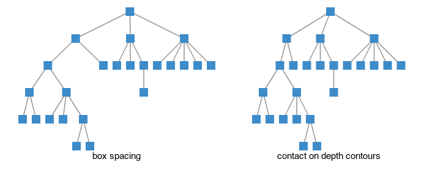
      <figcaption>
        Emulated: a small file tree laid out with each subtree as one block (box
        spacing), and with contact on its depth contours, where subtrees
        interlock. Main has no contour code, so the layout is computed in a
        throwaway story.
      </figcaption>
    </figure>
    <p>
      Contact and optical spacing serve different goals, so neither replaces the
      other.
    </p>
    <ul>
      <li>
        <b>Packing.</b> Contact packs shapes as tightly as possible without
        overlap. Tidy trees and ridgelines want this, and readers expect it
        there.
      </li>
      <li>
        <b>Looking even.</b> Optical spacing makes the gaps look equal. Rows of
        letter-like shapes, icons, and padding inside a container want this.
      </li>
    </ul>
    <p>
      So the <code>Spacing</code> family likely needs both, chosen by what the
      visualization is for. A tidy tree in GoFish would be
      <code>spread</code> with <code>Spacing.contour(n)</code> over subtree
      profiles, which makes it a test case for both pages.
    </p>
  </article>
  <h2 id="set-it-yourself">Set it yourself</h2>
  <article class="card">
    <p>
      Move the square, then the triangle, to where the gaps look even to you.
      Drag the shape or use the slider. Each model predicts the position where
      its own measure of the two compared gaps is equal; show the predictions
      when you are ready, and the ranking says which model is closest to you.
    </p>
    <div class="sp-tools">
      <label
        ><input type="checkbox" id="sp-ticks" /> Show the models'
        positions</label
      >
      <label
        ><input type="checkbox" id="sp-squint" /> Squint (blur the
        shapes)</label
      >
      <button type="button" id="sp-reset">Reset</button>
    </div>
    <div class="sp-widget" id="sp-w1">
      <p class="label">
        1. Square to triangles. The triangles are fixed 30 px apart.
      </p>
      <svg
        class="sp-svg"
        role="img"
        aria-label="A square and three triangles; the square moves"
      ></svg>
      <label class="sp-slider"
        >Square gap <input type="range" min="0" max="90" step="0.5" />
        <output></output
      ></label>
    </div>
    <div class="sp-widget" id="sp-w2">
      <p class="label">
        2. A triangle between a circle and a square, which are fixed.
      </p>
      <svg
        class="sp-svg"
        role="img"
        aria-label="A circle, a triangle and a square; the triangle moves"
      ></svg>
      <label class="sp-slider"
        >Tip gap <input type="range" min="0" max="64" step="0.5" />
        <output></output
      ></label>
    </div>
    <div class="sp-ranks">
      <div>
        <p class="label">Closest to you, widget 1</p>
        <ol id="sp-r1">
          <li class="sp-empty">Move the square first.</li>
        </ol>
      </div>
      <div>
        <p class="label">Closest to you, widget 2</p>
        <ol id="sp-r2">
          <li class="sp-empty">Move the triangle first.</li>
        </ol>
      </div>
      <div>
        <p class="label">Both (mean distance)</p>
        <ol id="sp-r3">
          <li class="sp-empty">Set both.</li>
        </ol>
      </div>
    </div>
    <p class="note">
      Distances are in px of the shapes' own size (56 px). An asterisk marks a
      model whose two measures never become equal; its position is where they
      come closest. A dagger marks a model whose measures are equal only where
      both are under a third of what it measures for the 30 px strip between A
      and V: the fillet area on widget 2 never sees more than 15 px of gap next
      to the circle, so it cannot place the triangle. The tables behind this are
      computed by
      <code>widgetRun.ts</code> from the same code as the renders.
    </p>
    <style>
      .sp-tools {
        display: flex;
        flex-wrap: wrap;
        gap: 8px 18px;
        align-items: center;
        margin: 8px 0 4px;
      }
      .sp-tools button {
        font: inherit;
        padding: 3px 12px;
        border: 1px solid var(--line);
        border-radius: 6px;
        background: var(--card);
        color: var(--fg);
        cursor: pointer;
      }
      .sp-widget {
        margin: 10px 0 14px;
      }
      .sp-svg {
        width: 100%;
        height: auto;
        display: block;
        touch-action: none;
        user-select: none;
      }
      .sp-svg .sp-move {
        cursor: grab;
      }
      .sp-svg .sp-shapes {
        transition: filter 0.2s;
      }
      .sp-squint .sp-svg .sp-shapes {
        filter: blur(3px);
      }
      .sp-slider {
        display: flex;
        align-items: center;
        gap: 10px;
        font-size: 14px;
      }
      .sp-slider input {
        flex: 1;
        min-width: 0;
      }
      .sp-slider output {
        min-width: 4.5em;
        font-variant-numeric: tabular-nums;
        color: var(--muted);
      }
      .sp-ranks {
        display: grid;
        grid-template-columns: repeat(auto-fit, minmax(200px, 1fr));
        gap: 4px 20px;
      }
      .sp-ranks ol {
        margin: 4px 0 8px;
        padding-left: 1.6em;
        font-size: 14px;
      }
      .sp-ranks li {
        margin: 1px 0;
      }
      .sp-ranks .sp-empty {
        list-style: none;
        margin-left: -1.6em;
        color: var(--muted);
      }
      .sp-ranks .sp-dot {
        display: inline-block;
        width: 9px;
        height: 9px;
        border-radius: 50%;
        margin-right: 6px;
        vertical-align: 0;
      }
      .sp-ranks .sp-d {
        color: var(--muted);
        font-variant-numeric: tabular-nums;
      }
    </style>
    <script id="sp-data" type="application/json">
      {
        "S": 56,
        "T": 30,
        "shapes": {
          "square": [
            [0, 0],
            [56, 0],
            [56, 56],
            [0, 56]
          ],
          "up": [
            [0, 0],
            [56, 0],
            [28, 56]
          ],
          "down": [
            [0, 56],
            [28, 0],
            [56, 56]
          ],
          "circle": [
            [56, 28],
            [55.893451546568876, 30.440360796934428],
            [55.574617084341824, 32.86214897467405],
            [55.04592313609391, 35.246933262870584],
            [54.311393382005434, 37.57656401311873],
            [53.3766180370262, 39.83331132873958],
            [52.248711305964285, 42],
            [50.93625724009177, 44.060140217829286],
            [49.449244407331385, 45.9980530712231],
            [47.798989873223334, 47.79898987322333],
            [45.9980530712231, 49.449244407331385],
            [44.06014021782929, 50.93625724009176],
            [42, 52.24871130596428],
            [39.83331132873958, 53.3766180370262],
            [37.57656401311873, 54.311393382005434],
            [35.246933262870584, 55.04592313609391],
            [32.86214897467405, 55.574617084341824],
            [30.440360796934428, 55.893451546568876],
            [28, 56],
            [25.559639203065576, 55.893451546568876],
            [23.13785102532595, 55.574617084341824],
            [20.753066737129416, 55.04592313609391],
            [18.42343598688128, 54.311393382005434],
            [16.166688671260417, 53.376618037026205],
            [14.000000000000007, 52.248711305964285],
            [11.939859782170707, 50.93625724009176],
            [10.0019469287769, 49.449244407331385],
            [8.201010126776673, 47.798989873223334],
            [6.550755592668619, 45.998053071223104],
            [5.0637427599082265, 44.060140217829286],
            [3.751288694035722, 42.00000000000001],
            [2.623381962973802, 39.83331132873958],
            [1.6886066179945658, 37.57656401311873],
            [0.9540768639060886, 35.24693326287058],
            [0.4253829156581759, 32.86214897467405],
            [0.10654845343112385, 30.440360796934428],
            [0, 28.000000000000004],
            [0.10654845343112385, 25.55963920306558],
            [0.4253829156581723, 23.137851025325958],
            [0.954076863906085, 20.75306673712943],
            [1.6886066179945658, 18.423435986881277],
            [2.6233819629737916, 16.16668867126043],
            [3.7512886940357184, 13.999999999999996],
            [5.063742759908223, 11.939859782170718],
            [6.550755592668608, 10.00194692877691],
            [8.201010126776666, 8.201010126776673],
            [10.001946928776896, 6.550755592668619],
            [11.939859782170721, 5.063742759908219],
            [13.999999999999988, 3.751288694035722],
            [16.166688671260403, 2.6233819629738093],
            [18.42343598688128, 1.6886066179945658],
            [20.753066737129423, 0.9540768639060886],
            [23.13785102532595, 0.4253829156581759],
            [25.55963920306557, 0.10654845343112385],
            [27.999999999999996, 0],
            [30.44036079693442, 0.10654845343112385],
            [32.86214897467404, 0.4253829156581723],
            [35.24693326287057, 0.954076863906085],
            [37.576564013118734, 1.6886066179945658],
            [39.83331132873957, 2.6233819629737916],
            [41.999999999999986, 3.7512886940357077],
            [44.060140217829286, 5.06374275990823],
            [45.9980530712231, 6.550755592668612],
            [47.79898987322333, 8.201010126776666],
            [49.44924440733138, 10.001946928776892],
            [50.93625724009176, 11.9398597821707],
            [52.248711305964285, 14.000000000000009],
            [53.37661803702619, 16.166688671260403],
            [54.311393382005434, 18.42343598688128],
            [55.04592313609391, 20.753066737129423],
            [55.574617084341824, 23.13785102532595],
            [55.893451546568876, 25.55963920306557]
          ],
          "left": [
            [0, 28],
            [56, 0],
            [56, 56]
          ]
        },
        "w1": {
          "xA": 0,
          "xV": 58,
          "xA2": 116,
          "p": [
            0, 1, 2, 3, 4, 5, 6, 7, 8, 9, 10, 11, 12, 13, 14, 15, 16, 17, 18,
            19, 20, 21, 22, 23, 24, 25, 26, 27, 28, 29, 30, 31, 32, 33, 34, 35,
            36, 37, 38, 39, 40, 41, 42, 43, 44, 45, 46, 47, 48, 49, 50, 51, 52,
            53, 54, 55, 56, 57, 58, 59, 60, 61, 62, 63, 64, 65, 66, 67, 68, 69,
            70, 71, 72, 73, 74, 75, 76, 77, 78, 79, 80, 81, 82, 83, 84, 85, 86,
            87, 88, 89, 90
          ]
        },
        "w2": {
          "D": 120,
          "xT0": 56,
          "xSq": 176,
          "p": [
            0, 1, 2, 3, 4, 5, 6, 7, 8, 9, 10, 11, 12, 13, 14, 15, 16, 17, 18,
            19, 20, 21, 22, 23, 24, 25, 26, 27, 28, 29, 30, 31, 32, 33, 34, 35,
            36, 37, 38, 39, 40, 41, 42, 43, 44, 45, 46, 47, 48, 49, 50, 51, 52,
            53, 54, 55, 56, 57, 58, 59, 60, 61, 62, 63, 64
          ]
        },
        "models": [
          { "key": "box", "label": "box gap" },
          { "key": "contact", "label": "contact" },
          { "key": "euclid", "label": "(a) straight-line" },
          { "key": "areaSum", "label": "(b) area model" },
          { "key": "pairArea", "label": "(d) pair white area" },
          { "key": "open4", "label": "(g) opening r 4" },
          { "key": "open8", "label": "(g) opening r 8" },
          { "key": "filletT", "label": "(i) fillet R 30" },
          { "key": "fillet2T", "label": "(i) fillet R 60" }
        ],
        "m1": {
          "box": {
            "gap": [
              0, 1, 2, 3, 4, 5, 6, 7, 8, 9, 10, 11, 12, 13, 14, 15, 16, 17, 18,
              19, 20, 21, 22, 23, 24, 25, 26, 27, 28, 29, 30, 31, 32, 33, 34,
              35, 36, 37, 38, 39, 40, 41, 42, 43, 44, 45, 46, 47, 48, 49, 50,
              51, 52, 53, 54, 55, 56, 57, 58, 59, 60, 61, 62, 63, 64, 65, 66,
              67, 68, 69, 70, 71, 72, 73, 74, 75, 76, 77, 78, 79, 80, 81, 82,
              83, 84, 85, 86, 87, 88, 89, 90
            ],
            "ref": 2
          },
          "contact": {
            "gap": [
              0, 1, 2, 3, 4, 5, 6, 7, 8, 9, 10, 11, 12, 13, 14, 15, 16, 17, 18,
              19, 20, 21, 22, 23, 24, 25, 26, 27, 28, 29, 30, 31, 32, 33, 34,
              35, 36, 37, 38, 39, 40, 41, 42, 43, 44, 45, 46, 47, 48, 49, 50,
              51, 52, 53, 54, 55, 56, 57, 58, 59, 60, 61, 62, 63, 64, 65, 66,
              67, 68, 69, 70, 71, 72, 73, 74, 75, 76, 77, 78, 79, 80, 81, 82,
              83, 84, 85, 86, 87, 88, 89, 90
            ],
            "ref": 30
          },
          "euclid": {
            "gap": [
              0, 1, 2, 3, 4, 5, 6, 7, 8, 9, 10, 11, 12, 13, 14, 15, 16, 17, 18,
              19, 20, 21, 22, 23, 24, 25, 26, 27, 28, 29, 30, 31, 32, 33, 34,
              35, 36, 37, 38, 39, 40, 41, 42, 43, 44, 45, 46, 47, 48, 49, 50,
              51, 52, 53, 54, 55, 56, 57, 58, 59, 60, 61, 62, 63, 64, 65, 66,
              67, 68, 69, 70, 71, 72, 73, 74, 75, 76, 77, 78, 79, 80, 81, 82,
              83, 84, 85, 86, 87, 88, 89, 90
            ],
            "ref": 26.83
          },
          "areaSum": {
            "gap": [
              10.52, 11.52, 12.52, 13.52, 14.52, 15.52, 16.52, 17.52, 18.52,
              19.52, 20.52, 21.52, 22.52, 23.52, 24.52, 25.52, 26.52, 27.52,
              28.52, 29.52, 30.52, 31.52, 32.52, 33.52, 34.52, 35.52, 36.52,
              37.52, 38.52, 39.52, 40.52, 41.52, 42.52, 43.52, 44.52, 45.52,
              46.52, 47.52, 48.52, 49.52, 50.52, 51.52, 52.52, 53.52, 54.52,
              55.52, 56.52, 57.52, 58.52, 59.52, 60.52, 61.52, 62.52, 63.52,
              64.52, 65.52, 66.52, 67.52, 68.52, 69.52, 70.52, 71.52, 72.52,
              73.52, 74.52, 75.52, 76.52, 77.52, 78.52, 79.52, 80.52, 81.52,
              82.52, 83.52, 84.52, 85.52, 86.52, 87.52, 88.52, 89.52, 90.52,
              91.52, 92.52, 93.52, 94.52, 95.52, 96.52, 97.52, 98.52, 99.52,
              100.52
            ],
            "ref": 23.01
          },
          "pairArea": {
            "gap": [
              14.01, 15.01, 16.01, 17.01, 18.01, 19.01, 20, 21, 22, 22.98,
              23.93, 24.84, 25.71, 26.55, 27.35, 28.12, 28.85, 29.55, 30.21,
              30.83, 31.42, 31.98, 32.49, 32.98, 33.42, 33.83, 34.21, 34.55,
              34.85, 35.12, 35.35, 35.55, 35.71, 35.84, 35.93, 35.98, 36, 36,
              36, 36, 36, 36, 36, 36, 36, 36, 36, 36, 36, 36, 36, 36, 36, 36,
              36, 36, 36, 36, 36, 36, 36, 36, 36, 36, 36, 36, 36, 36, 36, 36,
              36, 36, 36, 36, 36, 36, 36, 36, 36, 36, 36, 36, 36, 36, 36, 36,
              36, 36, 36, 36, 36
            ],
            "ref": 30.01
          },
          "open4": {
            "gap": [
              2.5, 3.5, 4.5, 5.5, 6.5, 7.5, 8.5, 9.5, 10.5, 11.5, 12.5, 13.5,
              14.5, 15.5, 16.5, 17.5, 18.5, 19.5, 20.5, 21.5, 22.5, 23.5, 24.5,
              25.5, 26.5, 27.5, 28.5, 29.5, 30.5, 31.5, 32.5, 33.5, 34.5, 35.5,
              36.5, 37.5, 38.5, 39.5, 40.5, 41.5, 42.5, 43.5, 44.5, 45.5, 46.5,
              47.5, 48.5, 49.5, 50.5, 51.5, 52.5, 53.5, 54.5, 55.5, 56.5, 57.5,
              58.5, 59.5, 60.5, 61.5, 62.5, 63.5, 64.5, 65.5, 66.5, 67.5, 68.5,
              69.5, 70.5, 71.5, 72.5, 73.5, 74.5, 75.5, 76.5, 77.5, 78.5, 79.5,
              80.5, 81.5, 82.5, 83.5, 84.5, 85.5, 86.5, 87.5, 88.5, 89.5, 90.5,
              91.5, 92.5
            ],
            "ref": 30.5
          },
          "open8": {
            "gap": [
              5, 6, 7, 8, 9, 10, 11, 12, 13, 14, 15, 16, 17, 18, 19, 20, 21, 22,
              23, 24, 25, 26, 27, 28, 29, 30, 31, 32, 33, 34, 35, 36, 37, 38,
              39, 40, 41, 42, 43, 44, 45, 46, 47, 48, 49, 50, 51, 52, 53, 54,
              55, 56, 57, 58, 59, 60, 61, 62, 63, 64, 65, 66, 67, 68, 69, 70,
              71, 72, 73, 74, 75, 76, 77, 78, 79, 80, 81, 82, 83, 84, 85, 86,
              87, 88, 89, 90, 91, 92, 93, 94, 95
            ],
            "ref": 30.5
          },
          "filletT": {
            "gap": [
              14.88, 15.84, 16.64, 17.59, 18.38, 19.12, 20.04, 20.82, 21.53,
              22.34, 23.09, 23.77, 24.43, 25.07, 25.61, 26.22, 26.83, 27.43,
              27.91, 28.48, 29.04, 29.05, 29.58, 29.66, 30.04, 30.09, 29.96,
              29.95, 29.76, 29.34, 28.63, 28.51, 28.05, 26.83, 26.58, 25.2,
              23.65, 22.26, 20.69, 19.01, 17.28, 15.5, 13.67, 11.79, 9.87, 8.1,
              6.91, 5.98, 5.23, 4.52, 4.04, 3.6, 3.3, 3.03, 2.83, 2.69, 2.59,
              2.51, 2.46, 2.42, 2.41, 2.41, 2.41, 2.41, 2.41, 2.41, 2.41, 2.41,
              2.41, 2.41, 2.41, 2.41, 2.41, 2.41, 2.41, 2.41, 2.41, 2.41, 2.41,
              2.41, 2.41, 2.41, 2.41, 2.41, 2.41, 2.41, 2.41, 2.41, 2.41, 2.41,
              2.41
            ],
            "ref": 28.32
          },
          "fillet2T": {
            "gap": [
              15.5, 16.49, 17.33, 18.31, 19.29, 20.28, 21.09, 22.06, 23.04,
              23.8, 24.77, 25.73, 26.35, 27.29, 28.24, 28.98, 29.92, 30.59,
              31.52, 32.45, 33.03, 33.94, 34.58, 35.48, 36.12, 36.86, 37.46,
              38.34, 38.94, 39.8, 40.24, 41.09, 41.66, 42.5, 42.89, 43.31,
              44.13, 44.46, 45.25, 45.77, 45.95, 46.71, 47.21, 47.35, 47.65,
              48.12, 48.56, 48.87, 48.93, 49.17, 49.58, 49.97, 49.96, 50.16,
              50.06, 50.22, 50.1, 50.23, 50.08, 50.19, 50.01, 50.09, 49.88,
              49.54, 49.57, 48.49, 48.49, 48.21, 47.78, 46.9, 46.56, 46.07,
              44.71, 44.58, 43.32, 41.88, 41.25, 39.75, 38.63, 37.21, 35.63, 34,
              32.32, 30.62, 28.17, 26.41, 23.88, 22.62, 21.48, 20.28, 18.48
            ],
            "ref": 29.77
          }
        },
        "m2": {
          "box": {
            "a": [
              0, 1, 2, 3, 4, 5, 6, 7, 8, 9, 10, 11, 12, 13, 14, 15, 16, 17, 18,
              19, 20, 21, 22, 23, 24, 25, 26, 27, 28, 29, 30, 31, 32, 33, 34,
              35, 36, 37, 38, 39, 40, 41, 42, 43, 44, 45, 46, 47, 48, 49, 50,
              51, 52, 53, 54, 55, 56, 57, 58, 59, 60, 61, 62, 63, 64
            ],
            "b": [
              64, 63, 62, 61, 60, 59, 58, 57, 56, 55, 54, 53, 52, 51, 50, 49,
              48, 47, 46, 45, 44, 43, 42, 41, 40, 39, 38, 37, 36, 35, 34, 33,
              32, 31, 30, 29, 28, 27, 26, 25, 24, 23, 22, 21, 20, 19, 18, 17,
              16, 15, 14, 13, 12, 11, 10, 9, 8, 7, 6, 5, 4, 3, 2, 1, 0
            ]
          },
          "contact": {
            "a": [
              0, 1, 2, 3, 4, 5, 6, 7, 8, 9, 10, 11, 12, 13, 14, 15, 16, 17, 18,
              19, 20, 21, 22, 23, 24, 25, 26, 27, 28, 29, 30, 31, 32, 33, 34,
              35, 36, 37, 38, 39, 40, 41, 42, 43, 44, 45, 46, 47, 48, 49, 50,
              51, 52, 53, 54, 55, 56, 57, 58, 59, 60, 61, 62, 63, 64
            ],
            "b": [
              64, 63, 62, 61, 60, 59, 58, 57, 56, 55, 54, 53, 52, 51, 50, 49,
              48, 47, 46, 45, 44, 43, 42, 41, 40, 39, 38, 37, 36, 35, 34, 33,
              32, 31, 30, 29, 28, 27, 26, 25, 24, 23, 22, 21, 20, 19, 18, 17,
              16, 15, 14, 13, 12, 11, 10, 9, 8, 7, 6, 5, 4, 3, 2, 1, 0
            ]
          },
          "euclid": {
            "a": [
              0, 1, 2, 3, 4, 5, 6, 7, 8, 9, 10, 11, 12, 13, 14, 15, 16, 17, 18,
              19, 20, 21, 22, 23, 24, 25, 26, 27, 28, 29, 30, 31, 32, 33, 34,
              35, 36, 37, 38, 39, 40, 41, 42, 43, 44, 45, 46, 47, 48, 49, 50,
              51, 52, 53, 54, 55, 56, 57, 58, 59, 60, 61, 62, 63, 64
            ],
            "b": [
              64, 63, 62, 61, 60, 59, 58, 57, 56, 55, 54, 53, 52, 51, 50, 49,
              48, 47, 46, 45, 44, 43, 42, 41, 40, 39, 38, 37, 36, 35, 34, 33,
              32, 31, 30, 29, 28, 27, 26, 25, 24, 23, 22, 21, 20, 19, 18, 17,
              16, 15, 14, 13, 12, 11, 10, 9, 8, 7, 6, 5, 4, 3, 2, 1, 0
            ]
          },
          "areaSum": {
            "a": [
              17.69, 18.69, 19.69, 20.69, 21.69, 22.69, 23.69, 24.69, 25.69,
              26.69, 27.69, 28.69, 29.69, 30.69, 31.69, 32.69, 33.69, 34.69,
              35.69, 36.69, 37.69, 38.69, 39.69, 40.69, 41.69, 42.69, 43.69,
              44.69, 45.69, 46.69, 47.69, 48.69, 49.69, 50.69, 51.69, 52.69,
              53.69, 54.69, 55.69, 56.69, 57.69, 58.69, 59.69, 60.69, 61.69,
              62.69, 63.69, 64.69, 65.69, 66.69, 67.69, 68.69, 69.69, 70.69,
              71.69, 72.69, 73.69, 74.69, 75.69, 76.69, 77.69, 78.69, 79.69,
              80.69, 81.69
            ],
            "b": [
              64.05, 63.05, 62.05, 61.05, 60.05, 59.05, 58.05, 57.05, 56.05,
              55.05, 54.05, 53.05, 52.05, 51.05, 50.05, 49.05, 48.05, 47.05,
              46.05, 45.05, 44.05, 43.05, 42.05, 41.05, 40.05, 39.05, 38.05,
              37.05, 36.05, 35.05, 34.05, 33.05, 32.05, 31.05, 30.05, 29.05,
              28.05, 27.05, 26.05, 25.05, 24.05, 23.05, 22.05, 21.05, 20.05,
              19.05, 18.05, 17.05, 16.05, 15.05, 14.05, 13.05, 12.05, 11.05,
              10.05, 9.05, 8.05, 7.05, 6.05, 5.05, 4.05, 3.05, 2.05, 1.05, 0.05
            ]
          },
          "pairArea": {
            "a": [
              25.51, 26.06, 26.6, 27.12, 27.63, 28.13, 28.61, 29.08, 29.53,
              29.97, 30.39, 30.8, 31.2, 31.58, 31.94, 32.3, 32.63, 32.95, 33.26,
              33.55, 33.82, 34.08, 34.32, 34.55, 34.76, 34.96, 35.14, 35.3,
              35.44, 35.57, 35.69, 35.78, 35.86, 35.92, 35.97, 35.99, 36, 36,
              36, 36, 36, 36, 36, 36, 36, 36, 36, 36, 36, 36, 36, 36, 36, 36,
              36, 36, 36, 36, 36, 36, 36, 36, 36, 36, 36
            ],
            "b": [
              36, 36, 36, 36, 36, 36, 36, 36, 36, 36, 36, 36, 36, 36, 36, 36,
              36, 36, 36, 36, 36, 36, 36, 36, 36, 36, 36, 36, 36, 35, 34, 33.01,
              32.01, 31.01, 30.01, 29.01, 28.01, 27.02, 26.02, 25.02, 24.02,
              23.02, 22.02, 21.03, 20.03, 19.03, 18.03, 17.03, 16.04, 15.04,
              14.04, 13.04, 12.04, 11.04, 10.05, 9.05, 8.05, 7.05, 6.05, 5.06,
              4.06, 3.06, 2.06, 1.06, 0.06
            ]
          },
          "open4": {
            "a": [
              5.5, 6.5, 7.5, 8.5, 9.5, 10.5, 11.5, 12.5, 13.5, 14.5, 15.5, 16.5,
              17.5, 18.5, 19.5, 20.5, 21.5, 22.5, 23.5, 24.5, 25.5, 26.5, 27.5,
              28.5, 29.5, 30.5, 31.5, 32.5, 33.5, 34.5, 35.5, 36.5, 37.5, 38.5,
              39.5, 40.5, 41.5, 42.5, 43.5, 44.5, 45.5, 46.5, 47.5, 48.5, 49.5,
              50.5, 51.5, 52.5, 53.5, 54.5, 55.5, 56.5, 57.5, 58.5, 59.5, 60.5,
              61.5, 62.5, 63.5, 64.5, 65.5, 66.5, 67.5, 68.5, 69.5
            ],
            "b": [
              64, 63, 62, 61, 60, 59, 58, 57, 56, 55, 54, 53, 52, 51, 50, 49,
              48, 47, 46, 45, 44, 43, 42, 41, 40, 39, 38, 37, 36, 35, 34, 33,
              32, 31, 30, 29, 28, 27, 26, 25, 24, 23, 22, 21, 20, 19, 18, 17,
              16, 15, 14, 13, 12, 11, 10, 9, 8, 7, 6, 5, 4, 3, 2, 1, 0
            ]
          },
          "open8": {
            "a": [
              10.5, 11.5, 12.5, 13.5, 14.5, 15.5, 16.5, 17.5, 18.5, 19.5, 20.5,
              21.5, 22.5, 23.5, 24.5, 25.5, 26.5, 27.5, 28.5, 29.5, 30.5, 31.5,
              32.5, 33.5, 34.5, 35.5, 36.5, 37.5, 38.5, 39.5, 40.5, 41.5, 42.5,
              43.5, 44.5, 45.5, 46.5, 47.5, 48.5, 49.5, 50.5, 51.5, 52.5, 53.5,
              54.5, 55.5, 56.5, 57.5, 58.5, 59.5, 60.5, 61.5, 62.5, 63.5, 64.5,
              65.5, 66.5, 67.5, 68.5, 69.5, 70.5, 71.5, 72.5, 73.5, 74.5
            ],
            "b": [
              64, 63, 62, 61, 60, 59, 58, 57, 56, 55, 54, 53, 52, 51, 50, 49,
              48, 47, 46, 45, 44, 43, 42, 41, 40, 39, 38, 37, 36, 35, 34, 33,
              32, 31, 30, 29, 28, 27, 26, 25, 24, 23, 22, 21, 20, 19, 18, 17,
              16, 15, 14, 13, 12, 11, 10, 9, 8, 7, 6, 5, 4, 3, 2, 1, 0
            ]
          },
          "filletT": {
            "a": [
              6.43, 6.45, 6.3, 6.66, 6.63, 6.6, 6.92, 6.86, 6.79, 7.07, 6.97,
              6.87, 7.12, 6.98, 6.63, 6.47, 6.67, 6.48, 6.29, 5.88, 6.02, 5.78,
              5.53, 5.05, 5.14, 4.85, 4.54, 4.02, 4.05, 3.71, 3.35, 2.96, 2.96,
              2.83, 2.54, 2.46, 2.21, 2.21, 2.18, 1.98, 1.96, 1.79, 1.78, 1.63,
              1.63, 1.51, 1.41, 1.41, 1.22, 1.22, 1.08, 1.08, 0.98, 0.92, 0.92,
              0.82, 0.81, 0.78, 0.73, 0.71, 0.7, 0.7, 0.7, 0.7, 0.7
            ],
            "b": [
              2.41, 2.41, 2.41, 2.41, 19.68, 23.98, 27.16, 29.23, 31.23, 32.21,
              33.16, 34.05, 34.89, 34.84, 35.63, 35.52, 36.23, 36.07, 35.89,
              35.7, 35.48, 35.25, 35, 34.73, 34.45, 34.13, 33.77, 33.27, 32.46,
              32.07, 31.54, 30.7, 30.25, 29.68, 28.8, 28.21, 27.32, 26.71, 25.8,
              25.16, 24.23, 23.52, 22.57, 21.63, 20.89, 19.93, 18.96, 18.2,
              17.21, 16.23, 15.25, 14.45, 13.45, 12.45, 11.45, 10.45, 9.59,
              8.57, 7.55, 6.54, 5.52, 4.5, 3.48, 2.46, 1.45
            ]
          },
          "fillet2T": {
            "a": [
              12.43, 13, 12.89, 13.45, 13.45, 13.3, 13.82, 13.79, 14.29, 14.25,
              14.73, 14.54, 14.3, 14.75, 14.65, 15.08, 14.82, 15.23, 15.09,
              14.8, 15.18, 14.84, 15.2, 15, 14.66, 14.98, 14.59, 14.17, 14.46,
              14.2, 14.46, 14.04, 13.59, 13.82, 13.32, 12.81, 13.01, 12.47,
              11.93, 12.09, 11.52, 10.94, 11.06, 10.46, 9.84, 9.93, 9.29, 8.63,
              8.69, 8.01, 7.32, 7.34, 6.63, 6.18, 6.18, 5.81, 5.51, 5.51, 5.25,
              5.04, 5.04, 4.85, 4.37, 4.23, 4.23
            ],
            "b": [
              51.79, 51.09, 51.18, 51, 50.27, 50.07, 49.32, 49.11, 48.34, 48.11,
              47.32, 47.07, 46.27, 45.98, 45.16, 44.86, 44.02, 43.57, 42.71,
              41.86, 41.52, 40.64, 40.16, 39.27, 38.38, 37.88, 36.96, 36.05,
              35.54, 34.61, 33.68, 33.07, 32.13, 31.18, 30.23, 29.57, 28.61,
              27.64, 26.68, 25.71, 25.04, 24.05, 23.07, 22.09, 21.11, 20.39,
              19.39, 18.39, 17.39, 16.39, 15.39, 14.39, 13.39, 12.59, 11.57,
              10.55, 9.54, 8.52, 7.5, 6.48, 5.46, 4.45, 3.43, 2.41, 1.39
            ]
          }
        }
      }
    </script>
    <script>
      (() => {
        const D = JSON.parse(document.getElementById("sp-data").textContent);
        const S = D.S;
        const COLORS = [
          "#8c8c8c",
          "#4e79a7",
          "#f28e2b",
          "#e15759",
          "#59a14f",
          "#b07aa1",
          "#76b7b2",
          "#edc948",
          "#ff9da7",
        ];
        const KEY = "stack-profile-spacing-v1";
        const NS = "http://www.w3.org/2000/svg";
        const state = { u1: null, u2: null, ticks: false, squint: false };
        try {
          Object.assign(state, JSON.parse(localStorage.getItem(KEY) || "{}"));
        } catch (e) {}
        const save = () => {
          try {
            localStorage.setItem(KEY, JSON.stringify(state));
          } catch (e) {}
        };

        /**
         * Where the two measures a and b are equal. Of several crossings, the one
         * where the measures are largest; with none, where they come closest
         * ("*"). A crossing where both are under a third of what the model
         * measures for the 30 px strip between A and V is marked "†": the model
         * sees almost no gap on either side there.
         */
        function solve(ps, a, b, scale) {
          let best = null;
          for (let i = 0; i + 1 < ps.length; i++) {
            const [d0, d1] = [a[i] - b[i], a[i + 1] - b[i + 1]];
            if (d0 === 0 || Math.sign(d0) !== Math.sign(d1)) {
              const t = d0 === 0 ? 0 : d0 / (d0 - d1);
              const level = a[i] + t * (a[i + 1] - a[i]);
              if (!best || level > best.level)
                best = { x: ps[i] + t * (ps[i + 1] - ps[i]), level };
            }
          }
          if (best)
            return { x: best.x, mark: best.level < scale / 3 ? "\u2020" : "" };
          let k = 0;
          ps.forEach(
            (_, i) => Math.abs(a[i] - b[i]) < Math.abs(a[k] - b[k]) && (k = i)
          );
          return { x: ps[k], mark: "*" };
        }
        const scale = (m) => D.m1[m.key].ref;
        const preds1 = D.models.map((m) =>
          solve(
            D.w1.p,
            D.m1[m.key].gap,
            D.m1[m.key].gap.map(() => D.m1[m.key].ref),
            scale(m)
          )
        );
        const preds2 = D.models.map((m) =>
          solve(D.w2.p, D.m2[m.key].a, D.m2[m.key].b, scale(m))
        );

        const el = (tag, attrs, parent) => {
          const e = document.createElementNS(NS, tag);
          for (const k in attrs) e.setAttribute(k, attrs[k]);
          if (parent) parent.appendChild(e);
          return e;
        };
        const pts = (ring, dx) =>
          ring
            .map(([x, y]) => `${(x + dx).toFixed(2)},${(S - y).toFixed(2)}`)
            .join(" ");

        function widget(root, cfg) {
          const svg = root.querySelector("svg");
          const slider = root.querySelector("input");
          const out = root.querySelector("output");
          const [x0, x1] = cfg.range;
          const lanes = D.models.length;
          const shapes = el(
            "g",
            { class: "sp-shapes", fill: "var(--fg)" },
            svg
          );
          const fit = (n) =>
            svg.setAttribute(
              "viewBox",
              `${x0} -6 ${x1 - x0} ${S + 18 + n * 11}`
            );
          cfg.fixed.forEach(([ring, dx]) =>
            el("polygon", { points: pts(ring, dx) }, shapes)
          );
          const mover = el("polygon", { class: "sp-move" }, shapes);
          const ticks = el(
            "g",
            { "font-size": "7", "font-family": "Inter, system-ui, sans-serif" },
            svg
          );
          el(
            "line",
            { x1: x0, x2: x1, y1: S + 4, y2: S + 4, stroke: "var(--line)" },
            svg
          );
          const you = el("path", { fill: "var(--fg)" }, svg);

          // ticks: each model's position of the moving edge, labels in lanes
          const order = cfg.preds
            .map((p, i) => ({ i, x: cfg.edge(p.x) }))
            .sort((a, b) => a.x - b.x);
          const ends = Array(lanes).fill(-Infinity);
          let used = 1;
          order.forEach(({ i, x }) => {
            const label = D.models[i].label + cfg.preds[i].mark;
            const w = label.length * 3.7 + 3;
            const lane = Math.max(
              0,
              ends.findIndex((e) => e < x - 1)
            );
            used = Math.max(used, lane + 1);
            ends[lane] = x + w;
            const y = S + 8 + lane * 11;
            el(
              "line",
              {
                x1: x,
                x2: x,
                y1: S + 1,
                y2: y + 1,
                stroke: COLORS[i],
                "stroke-width": 1.4,
              },
              ticks
            );
            const t = el(
              "text",
              { x: x + 1.5, y: y + 6, fill: COLORS[i] },
              ticks
            );
            t.textContent = label;
          });

          const fitTicks = (on) => fit(on ? used : 0);
          const set = (v, user) => {
            v = Math.max(+slider.min, Math.min(+slider.max, v));
            mover.setAttribute("points", pts(cfg.ring, cfg.at(v)));
            const e = cfg.edge(v);
            you.setAttribute("d", `M${e} ${S + 4} l-2.5 4 h5 z`);
            slider.value = v;
            out.textContent = `${(+v).toFixed(1)} px`;
            if (user) {
              state[cfg.key] = +(+v).toFixed(1);
              save();
              rank();
            }
          };
          slider.addEventListener("input", () => set(+slider.value, true));
          let grab = null;
          const toX = (ev) => {
            const p = svg.createSVGPoint();
            p.x = ev.clientX;
            p.y = ev.clientY;
            return p.matrixTransform(svg.getScreenCTM().inverse()).x;
          };
          mover.addEventListener("pointerdown", (ev) => {
            grab = toX(ev) - cfg.edge(+slider.value);
            mover.setPointerCapture(ev.pointerId);
          });
          mover.addEventListener("pointermove", (ev) => {
            if (grab === null) return;
            set(cfg.fromEdge(toX(ev) - grab), true);
          });
          const end = () => (grab = null);
          mover.addEventListener("pointerup", end);
          mover.addEventListener("pointercancel", end);
          return { set, ticks, fitTicks, reset: () => set(cfg.start, false) };
        }

        const sh = D.shapes;
        const w1 = widget(document.getElementById("sp-w1"), {
          key: "u1",
          range: [-S - 96, D.w1.xA2 + S + 4],
          fixed: [
            [sh.up, D.w1.xA],
            [sh.down, D.w1.xV],
            [sh.up, D.w1.xA2],
          ],
          ring: sh.square,
          at: (p) => D.w1.xA - S - p,
          edge: (p) => D.w1.xA - p,
          fromEdge: (x) => D.w1.xA - x,
          preds: preds1,
          start: 60,
        });
        const w2 = widget(document.getElementById("sp-w2"), {
          key: "u2",
          range: [-4, D.w2.xSq + S + 4],
          fixed: [
            [sh.circle, 0],
            [sh.square, D.w2.xSq],
          ],
          ring: sh.left,
          at: (t) => D.w2.xT0 + t,
          edge: (t) => D.w2.xT0 + t,
          fromEdge: (x) => x - D.w2.xT0,
          preds: preds2,
          start: 50,
        });

        function list(ol, rows) {
          ol.innerHTML = "";
          rows.forEach(({ i, d, note }) => {
            const li = document.createElement("li");
            li.innerHTML = `<span class="sp-dot" style="background:${COLORS[i]}"></span>${D.models[i].label}${note} <span class="sp-d">${d.toFixed(1)} px</span>`;
            ol.appendChild(li);
          });
        }
        function rank() {
          const r = (preds, u) =>
            preds
              .map((p, i) => ({ i, d: Math.abs(p.x - u), note: p.mark }))
              .sort((a, b) => a.d - b.d);
          const empty = (ol, text) =>
            (ol.innerHTML = `<li class="sp-empty">${text}</li>`);
          const [o1, o2, o3] = ["sp-r1", "sp-r2", "sp-r3"].map((id) =>
            document.getElementById(id)
          );
          state.u1 === null
            ? empty(o1, "Move the square first.")
            : list(o1, r(preds1, state.u1));
          state.u2 === null
            ? empty(o2, "Move the triangle first.")
            : list(o2, r(preds2, state.u2));
          if (state.u1 === null || state.u2 === null) empty(o3, "Set both.");
          else
            list(
              o3,
              D.models
                .map((_, i) => ({
                  i,
                  d:
                    (Math.abs(preds1[i].x - state.u1) +
                      Math.abs(preds2[i].x - state.u2)) /
                    2,
                  note: preds1[i].mark || preds2[i].mark,
                }))
                .sort((a, b) => a.d - b.d)
            );
        }

        const ticksBox = document.getElementById("sp-ticks");
        const squintBox = document.getElementById("sp-squint");
        const section = ticksBox.closest(".card") || document.body;
        const apply = () => {
          [w1, w2].forEach((w) => {
            w.ticks.style.display = state.ticks ? "" : "none";
            w.fitTicks(state.ticks);
          });
          section.classList.toggle("sp-squint", !!state.squint);
          ticksBox.checked = !!state.ticks;
          squintBox.checked = !!state.squint;
        };
        ticksBox.addEventListener("change", () => {
          state.ticks = ticksBox.checked;
          save();
          apply();
        });
        squintBox.addEventListener("change", () => {
          state.squint = squintBox.checked;
          save();
          apply();
        });
        document.getElementById("sp-reset").addEventListener("click", () => {
          state.u1 = state.u2 = null;
          state.ticks = state.squint = false;
          save();
          w1.reset();
          w2.reset();
          apply();
          rank();
        });
        state.u1 === null ? w1.reset() : w1.set(state.u1, false);
        state.u2 === null ? w2.reset() : w2.set(state.u2, false);
        apply();
        rank();
      })();
    </script>
  </article>
  <h2 id="test-rows">Josh's test rows and candidates (a) to (f)</h2>
  <article class="card">
    <p>
      Josh picked three rows from the shapes renders further down as the test.
      On "square, A, V, A" he wrote, "the triangles look nice but the square is
      too far away": the gap from the square to the first triangle should look
      the same as the gaps between the triangles. On "triangle, circle, V,
      square" he saw a "similar issue here imo but smaller", between the V and
      the square. On "circle, left triangle, square": "the circle is too far
      away... maybe b/c the tip of the triangle gets really small?" The goal for
      every model below is that every gap in a row looks the same.
    </p>
    <p>
      <b>Contact is not buggy.</b> It measures the gap along the spacing axis,
      on each horizontal line, and keeps the smallest one at the target. At a 10
      px target the square sits exactly 10 px from the A's base corner, the same
      horizontal gap as between the A and the V. What differs is the white
      between them. The A to V gap is a parallel strip, 10 px on every line. The
      square to A gap is a wedge that opens toward the apex, 24 px on average.
      The circle to tip gap is 10 px at the tip and 44 px on average, because
      only the tip is near the circle and both shapes bend away from it. Tim
      Ahrens (Kern On) describes perceived distance as closer to the average
      distance, or the white area, than to the minimum, which fits all three of
      Josh's readings. A second, smaller effect: contact measures horizontally,
      and these triangle sides slope at 63°, so the A to V strip is only 8.9 px
      measured straight across.
    </p>
    <p>The candidates, each emulated on all three rows:</p>
    <ul>
      <li>
        <b>(a) Contact, straight-line.</b> The gap is the shortest distance
        between the outlines, not the horizontal one.
      </li>
      <li>
        <b>(b) Area model, sum.</b> HT Letterspacer style margins (explained
        below): each side gets the flat-side margin minus its mean clamped
        depth, and two sides add. Contact at 3 px is the floor.
      </li>
      <li>
        <b>(c) Area model, max.</b> The same margins, combined by the larger
        one.
      </li>
      <li>
        <b>(d) Pair white area.</b> Move the pair until the white between the
        two facing sides, capped on each line, equals what a parallel strip of
        the target width has. This depends on the pair, so it is closer to
        kerning than to spacing. Floor 3 px.
      </li>
      <li>
        <b>(e) Opened outline.</b> Contact on each shape after removing parts
        thinner than a width. It is (g) below, done with exact distances, so it
        is shown there.
      </li>
      <li>
        <b>(f) Blurred outline.</b> Josh's suggestion: blur each shape's ink
        with a Gaussian of width σ, take the 0.5 level as a softer outline, and
        apply contact to that. Tips and sharp corners retract because little ink
        surrounds them, and a shape's own hollows fill in. A lower level grows
        the outline and a higher one shrinks it. Because each shape is blurred
        alone, the wedge between two shapes does not fill; here the triangles
        are convex, so only the corner retraction acts.
      </li>
    </ul>
    <p>
      Every model uses the same target in each setting: 30 px for the loose
      setting, which no pair's floor reaches, and 10 px for the tight one, with
      a 3 px floor for the models that have one.
    </p>
    <figure class="wide">
      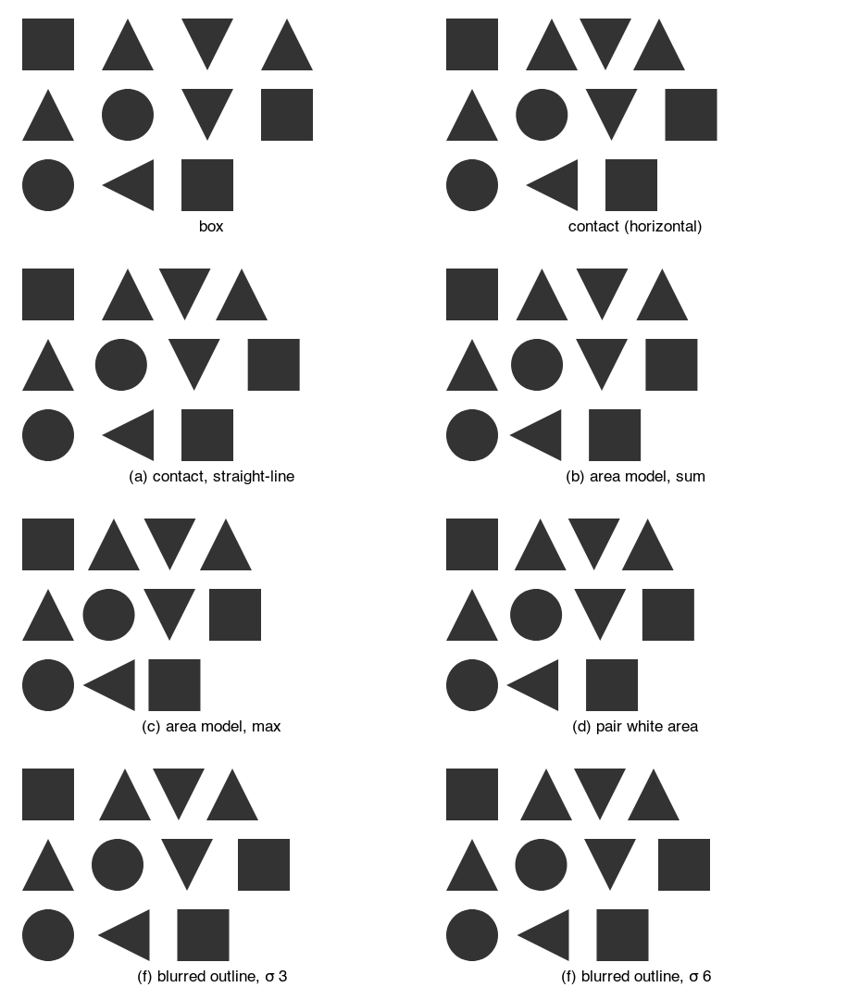
      <figcaption>
        Loose, target 30 px. No pair hits the floor in any model.
      </figcaption>
    </figure>
    <p>
      Mean horizontal gap in px over the lines both shapes share, per pair, at
      the loose target. It stands in for "looks the same"; it is not the
      judgment itself.
    </p>
    <div class="table-wrap">
      <table>
        <tr>
          <th>model</th>
          <th>□ △ ▽ △</th>
          <th>△ ○ ▽ □</th>
          <th>○ ◁ □</th>
        </tr>
        <tr>
          <td>box</td>
          <td>44, 58, 58</td>
          <td>50, 50, 44</td>
          <td>64, 30</td>
        </tr>
        <tr>
          <td>contact</td>
          <td>44, 30, 30</td>
          <td>39, 39, 44</td>
          <td>64, 30</td>
        </tr>
        <tr>
          <td>(a) contact, straight-line</td>
          <td>44, 34, 34</td>
          <td>43, 43, 44</td>
          <td>64, 30</td>
        </tr>
        <tr>
          <td>(b) area model, sum</td>
          <td>33, 37, 37</td>
          <td>34, 34, 33</td>
          <td>46, 30</td>
        </tr>
        <tr>
          <td>(c) area model, max</td>
          <td>29, 33, 33</td>
          <td>30, 30, 29</td>
          <td>44, 15</td>
        </tr>
        <tr>
          <td>(d) pair white area</td>
          <td>32, 30, 30</td>
          <td>33, 33, 32</td>
          <td>43, 30</td>
        </tr>
        <tr>
          <td>(f) blurred outline, σ 6</td>
          <td>38, 30, 30</td>
          <td>39, 39, 38</td>
          <td>55, 30</td>
        </tr>
      </table>
    </div>
    <figure class="wide">
      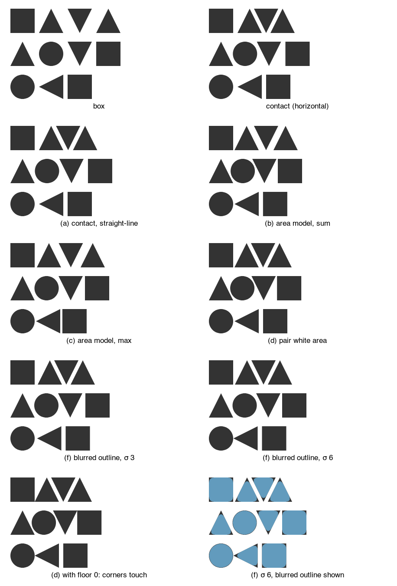
      <figcaption>
        Tight, target 10 px, floor 3 px. The last two panels show (d) with the
        floor at 0, and (f) with its blurred outline drawn in blue over the ink:
        the dark corners and tips are what the blur retracts.
      </figcaption>
    </figure>
    <p>
      The same measure at the tight target. Bold marks a pair whose position the
      3 px floor set.
    </p>
    <div class="table-wrap">
      <table>
        <tr>
          <th>model</th>
          <th>□ △ ▽ △</th>
          <th>△ ○ ▽ □</th>
          <th>○ ◁ □</th>
        </tr>
        <tr>
          <td>box</td>
          <td>24, 38, 38</td>
          <td>30, 30, 24</td>
          <td>44, 10</td>
        </tr>
        <tr>
          <td>contact</td>
          <td>24, 10, 10</td>
          <td>19, 19, 24</td>
          <td>44, 10</td>
        </tr>
        <tr>
          <td>(a) contact, straight-line</td>
          <td>24, 11, 11</td>
          <td>21, 21, 24</td>
          <td>44, 10</td>
        </tr>
        <tr>
          <td>(b) area model, sum</td>
          <td><b>17</b>, 17, 17</td>
          <td>14, 14, <b>17</b></td>
          <td><b>37</b>, 10</td>
        </tr>
        <tr>
          <td>(c) area model, max</td>
          <td>19, 23, 23</td>
          <td>20, 20, 19</td>
          <td><b>37</b>, 5</td>
        </tr>
        <tr>
          <td>(d) pair white area</td>
          <td><b>17</b>, 10, 10</td>
          <td>13, 13, <b>17</b></td>
          <td><b>37</b>, 10</td>
        </tr>
        <tr>
          <td>(d) with floor 0</td>
          <td>14, 10, 10</td>
          <td>13, 13, 14</td>
          <td>34, 10</td>
        </tr>
        <tr>
          <td>(f) blurred outline, σ 6</td>
          <td>18, 10, 10</td>
          <td>19, 19, 18</td>
          <td>35, 10</td>
        </tr>
      </table>
    </div>
    <p><b>What the test shows.</b></p>
    <ul>
      <li>
        At the loose target, <b>(d) pair white area</b> evens rows one and two
        best (all gaps within 3 px), and <b>(b) sum</b> is close but pushes the
        triangles apart to 37 px. Neither closes the circle row: the circle
        stays at 43 to 46 px, because each line's white is capped and the circle
        bends away for most of the band.
      </li>
      <li>
        <b>(c) max</b> looks even on rows one and two, but only because it is
        calibrated like sum, with a flat side carrying half the target: two flat
        sides then end at half the target (the triangle to square pair at 15
        px). Calibrated as a minimum, with a flat side carrying the whole
        target, max puts the square at its box gap, the same as contact. So max
        does not help here.
      </li>
      <li>
        <b>(a)</b> moves the triangles about 2 px apart, which helps a little in
        the wrong place.
      </li>
      <li>
        <b>(f)</b>, like (g) below, moves only pairs that meet at a corner or a
        tip, by roughly σ, and leave parallel strips alone. It moves every row
        in the right direction and do not disturb the A to V gap, but not far:
        the square comes from 44 to 38 px against a target of 30. A larger σ
        moves more but also rounds every corner.
      </li>
      <li>
        At the tight target the floor is the limit, as Josh expected. With the
        floor at 0 the base corners touch and the square is still at 14 px
        against 10, so
        <b
          >no model makes the square look like the triangles without the corners
          colliding</b
        >. A smaller floor would tighten the A to V gap too only in the models
        that use the floor everywhere; in (d) it moves just the floored pairs.
        (f) is the only model here that lets the tip pass the floor: at σ 6 the
        circle comes within 0.5 px of the tip.
      </li>
    </ul>
    <p>
      A combination that was not rendered: (d) or (b) measured on the blurred
      outline, with the floor on the blurred outline too, so tips may pass and
      wedges still count.
    </p>
  </article>
  <h2 id="sdf">Candidates (g) to (j): signed distance fields</h2>
  <article class="card">
    <p>
      A <b>signed distance field</b> (SDF) gives, for any point, its distance to
      a shape's outline, negative inside. <code>enclose</code> already has exact
      ones: these renders reuse its <code>grownPrim</code> and
      <code>primD</code> (<code>enclose/prims.ts</code>) for the circle, a disc,
      and the square, a box. The triangles use Quilez's exact polygon distance,
      written for the prototype, since <code>prims.ts</code> has no polygon.
      Growing and shrinking by a disc are done on a 0.5 px raster: the exact
      distance in each cell, then a Euclidean distance transform. Four
      candidates:
    </p>
    <ul>
      <li>
        <b>(g) SDF opening.</b> Shrink each shape by r, grow it back by r, and
        use contact on the result, with the 3 px floor on the real shapes. Parts
        thinner than 2r, such as a tip, drop out. It matches (e) within half a
        pixel on every pair, so (e) is dropped. It keeps locality: each shape is
        measured alone.
      </li>
      <li>
        <b>(h) SDF closing.</b> Grow by r, shrink by r: this fills notches
        inside one shape. None of the test shapes has one, and the gaps move by
        half a pixel, which is the raster step. It would matter for a "c" or an
        "E", not here.
      </li>
      <li>
        <b>(i) Fillet area.</b> For neighbors A and B, take the closing of A ∪ B
        by a disc of radius R: the points that no disc of radius R missing both
        shapes can reach. This is the region <code>Shape.fillet()</code> draws
        around the two with no padding ("the padded members, closed by a disc").
        It is computed here from the exact distances, not with
        <code>enclose</code>'s outline code, which builds an outline from discs,
        boxes and segments rather than measuring an area. The area it adds
        beyond A and B, divided by the shapes' height, is a mean gap. Each pair
        moves out from the floor until that mean gap reaches the target. The
        fillet fills only where the gap is narrower than 2R, so a pair may reach
        its largest fillet before the target; it then stays there (italic in the
        tables).
      </li>
      <li>
        <b>(j) Smooth union.</b> The same, with the region where Quilez's
        polynomial smooth minimum of the two distances, radius k, is below 0. It
        does not agree with (i). The smooth minimum also fattens both shapes'
        outer sides wherever the two are near, so at k = 4 × target its bridge
        passes the target while the shapes are still at the floor (bold), and at
        k = target or 2 × target its area peaks before the target on most pairs.
        As a spacing measure it does not work without cutting the bridge to the
        gap.
      </li>
    </ul>
    <figure class="wide">
      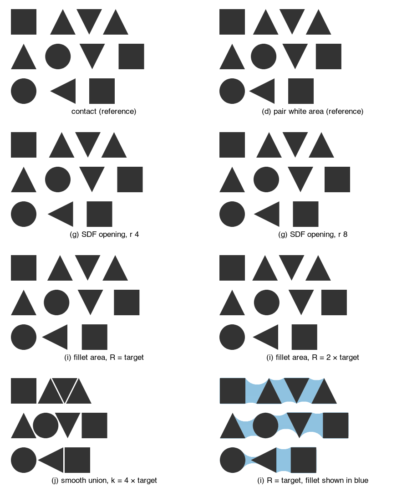
      <figcaption>
        Loose, target 30 px, floor 3 px. Contact and pair white area are the
        reference panels. The last panel draws the fillet of (i) in blue: the
        area being measured.
      </figcaption>
    </figure>
    <p>
      Mean horizontal gap in px per pair, as above. Bold: the floor set the
      pair. Italic: the fillet area peaked before the target.
    </p>
    <div class="table-wrap">
      <table>
        <tr>
          <th>model</th>
          <th>□ △ ▽ △</th>
          <th>△ ○ ▽ □</th>
          <th>○ ◁ □</th>
        </tr>
        <tr>
          <td>contact</td>
          <td>44, 30, 30</td>
          <td>39, 39, 44</td>
          <td>64, 30</td>
        </tr>
        <tr>
          <td>(d) pair white area</td>
          <td>32, 30, 30</td>
          <td>33, 33, 32</td>
          <td>43, 30</td>
        </tr>
        <tr>
          <td>(g) SDF opening, r 4</td>
          <td>42, 30, 30</td>
          <td>39, 39, 42</td>
          <td>59, 30</td>
        </tr>
        <tr>
          <td>(g) SDF opening, r 8</td>
          <td>39, 30, 30</td>
          <td>39, 39, 39</td>
          <td>54, 30</td>
        </tr>
        <tr>
          <td>(h) SDF closing, r 8</td>
          <td>45, 31, 31</td>
          <td>40, 40, 45</td>
          <td>65, 31</td>
        </tr>
        <tr>
          <td>(i) fillet area, R = target</td>
          <td>38, 33, 33</td>
          <td><i>36</i>, <i>38</i>, 38</td>
          <td><i>46</i>, 32</td>
        </tr>
        <tr>
          <td>(i) fillet area, R = 2 × target</td>
          <td>30, 30, 30</td>
          <td>40, 40, 30</td>
          <td><i>51</i>, 30</td>
        </tr>
        <tr>
          <td>(j) smooth union, k = 4 × target</td>
          <td><b>17</b>, <b>3</b>, <b>3</b></td>
          <td><b>12</b>, <b>12</b>, <b>17</b></td>
          <td><b>37</b>, <b>3</b></td>
        </tr>
      </table>
    </div>
    <figure class="wide">
      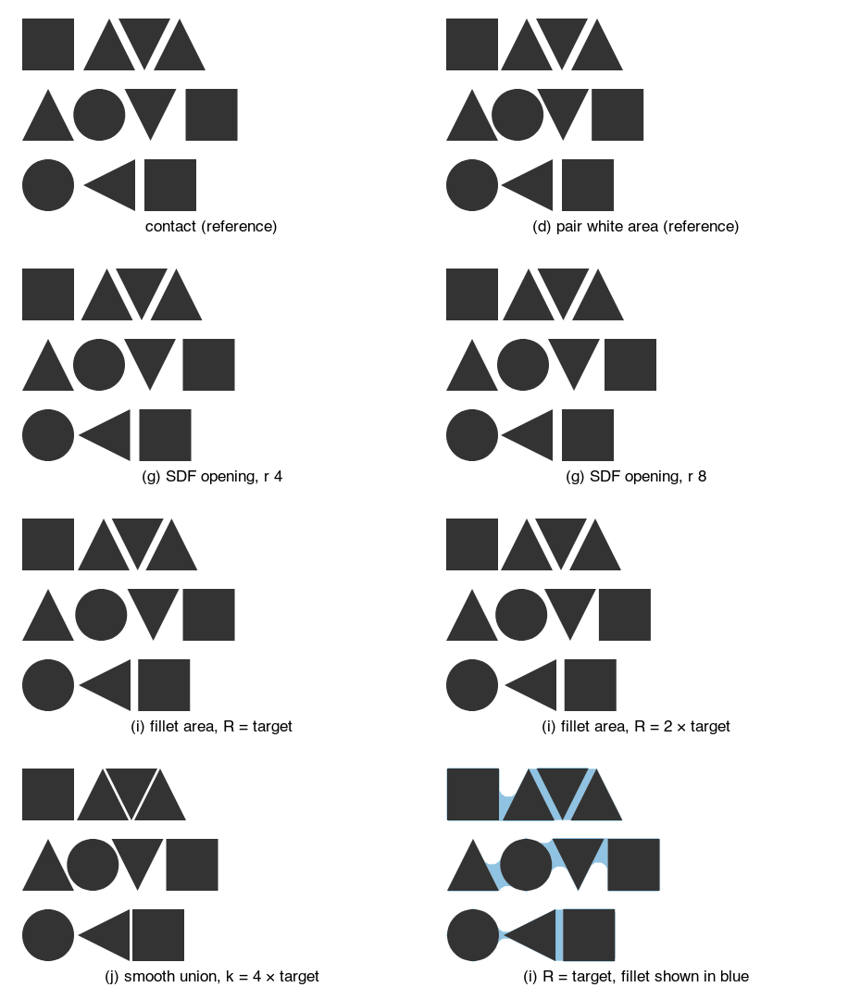
      <figcaption>Tight, target 10 px, floor 3 px.</figcaption>
    </figure>
    <div class="table-wrap">
      <table>
        <tr>
          <th>model</th>
          <th>□ △ ▽ △</th>
          <th>△ ○ ▽ □</th>
          <th>○ ◁ □</th>
        </tr>
        <tr>
          <td>contact</td>
          <td>24, 10, 10</td>
          <td>19, 19, 24</td>
          <td>44, 10</td>
        </tr>
        <tr>
          <td>(d) pair white area</td>
          <td><b>17</b>, 10, 10</td>
          <td>13, 13, <b>17</b></td>
          <td><b>37</b>, 10</td>
        </tr>
        <tr>
          <td>(g) SDF opening, r 4</td>
          <td>22, 10, 10</td>
          <td>19, 19, 22</td>
          <td>39, 10</td>
        </tr>
        <tr>
          <td>(g) SDF opening, r 8</td>
          <td>19, 10, 10</td>
          <td>19, 19, 19</td>
          <td><b>37</b>, 10</td>
        </tr>
        <tr>
          <td>(h) SDF closing, r 8</td>
          <td>25, 11, 11</td>
          <td>20, 20, 25</td>
          <td>45, 11</td>
        </tr>
        <tr>
          <td>(i) fillet area, R = target</td>
          <td><i>18</i>, 9, 9</td>
          <td><i>21</i>, <i>20</i>, <i>18</i></td>
          <td><i>39</i>, 8</td>
        </tr>
        <tr>
          <td>(i) fillet area, R = 2 × target</td>
          <td><b>17</b>, 9, 9</td>
          <td>17, 17, <b>17</b></td>
          <td><i>41</i>, 9</td>
        </tr>
        <tr>
          <td>(j) smooth union, k = 4 × target</td>
          <td><b>17</b>, <b>3</b>, <b>3</b></td>
          <td><b>12</b>, <b>12</b>, <b>17</b></td>
          <td><i>38</i>, <b>3</b></td>
        </tr>
      </table>
    </div>
    <p><b>What the SDF candidates show.</b></p>
    <ul>
      <li>
        <b>(i) with R = 2 × target fixes Josh's main row</b> at the loose
        target: square, A, V, A all sit at a mean gap of 30 px, and the V to
        square pair on the second row comes in to 30 too. The circle pairs on
        that row stay at 40 px.
      </li>
      <li>
        <b>(i) does not fix the circle row.</b> Next to a tip only a small
        region is narrower than 2R, so the fillet area peaks at a mean gap of 51
        px (46 with R = target) and never reaches the target. The circle comes
        in from 64 px, but not to 30.
      </li>
      <li>
        R matters: with R = target, the triangle pairs on row one end at 33 px
        and the square at 38. A default of R = 2 × target worked on these rows;
        this is untested on glyphs.
      </li>
      <li>
        At the tight target the floor still sets the square pairs, so (i) cannot
        do better than the other models there.
      </li>
      <li>
        <b>(g)</b> moves only corners and tips, by a few pixels, and is local;
        <b>(i)</b> compares pairs, so it gives up per-shape locality, the
        property that made the area model fit spread. (i) is closer to kerning
        than to spacing.
      </li>
    </ul>
  </article>
  <h2 id="measures">Box gap, contact gap and pitch</h2>
  <article class="card">
    <p>
      When shapes are irregular, the space between neighbors can be measured two
      ways. A <b>box gap</b> is the gap between bounding boxes, which is today's
      <code>spread</code>. A <b>contact gap</b> is the smallest gap between the
      facing outlines, measured slice by slice: the shapes slide together until
      the closest slice reaches the gap. Both renders in each pair use the same
      gap. The offsets are computed by hand (a throwaway helper,
      <code>spacingModels.ts</code>) and drawn with today's engine. The glyphs
      are traced from Georgia (serif) and Arial (sans) with fontTools.
    </p>
    <p class="label">
      Proposed: how the gap is measured is the value of spacing
    </p>
    <pre
      class="code lang-js"
    ><code class="language-javascript" data-hl="6">spread({ by: &quot;month&quot;, dir: &quot;y&quot;, spacing: 4 }); // sugar for Spacing.box(4)
spread({
  by: &quot;month&quot;,
  dir: &quot;y&quot;,
  spacing: Spacing.pitch(70, { at: &quot;baseline&quot; }),
}); // today&#x27;s anchor
spread({ by: &quot;month&quot;, dir: &quot;y&quot;, spacing: Spacing.contour(4) });</code></pre>
    <pre
      class="code lang-py"
    ><code class="language-python" data-hl="2">spread(by=&quot;month&quot;, dir=&quot;y&quot;, spacing=4)
spread(by=&quot;month&quot;, dir=&quot;y&quot;, spacing=Spacing.pitch(70, at=&quot;baseline&quot;))
spread(by=&quot;month&quot;, dir=&quot;y&quot;, spacing=Spacing.contour(4))</code></pre>
    <p class="label">Today (box gap, or a pitch with anchor)</p>
    <pre
      class="code"
    ><code class="language-javascript" data-hl="1">spread({ by: &quot;month&quot;, dir: &quot;y&quot;, spacing: 4 });
spread({ by: &quot;month&quot;, dir: &quot;y&quot;, spacing: 70, anchor: &quot;baseline&quot; });</code></pre>
    <div class="figs">
      <figure class="">
        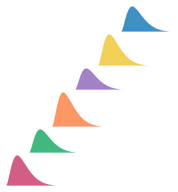
        <figcaption>
          Ridgeline, box gap 4 px: each ridge starts above the previous one's
          box.
        </figcaption>
      </figure>
      <figure class="">
        
        <figcaption>
          Ridgeline, contact gap 4 px: each ridge drops until its base would
          touch a ridge below, so it tucks over the long tails.
        </figcaption>
      </figure>
    </div>
    <div class="figs">
      <figure class="">
        
        <figcaption>Georgia, box gap 6 px.</figcaption>
      </figure>
      <figure class="">
        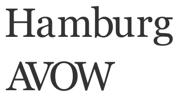
        <figcaption>Georgia, contact gap 6 px.</figcaption>
      </figure>
    </div>
    <div class="figs">
      <figure class="">
        
        <figcaption>Arial, box gap 6 px.</figcaption>
      </figure>
      <figure class="">
        
        <figcaption>Arial, contact gap 6 px.</figcaption>
      </figure>
    </div>
    <div class="figs">
      <figure class="">
        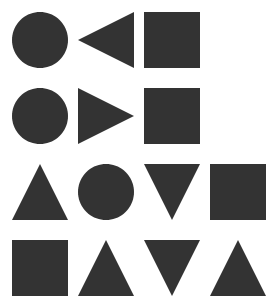
        <figcaption>
          Circles, triangles and squares, box gap 10 px. Rows: circle,
          left-pointing triangle, square; circle, right-pointing triangle,
          square; up, circle, down, square; square, up, down, up.
        </figcaption>
      </figure>
      <figure class="">
        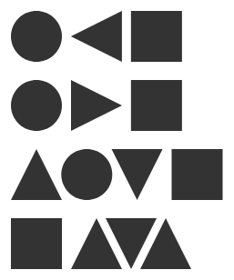
        <figcaption>The same rows, contact gap 10 px.</figcaption>
      </figure>
    </div>
    <h4>What the renders show</h4>
    <ul>
      <li>
        <b>Ridgeline.</b> Contact does what it promises. Each ridge sits as low
        as it can without touching, and the column is shorter.
      </li>
      <li>
        <b>Serif, "Hamburg".</b> Contact changes almost nothing, in either font.
        Stems, serifs and round sides reach the bounding box, so the closest
        slice is at the box edge. In Georgia the serifs set the closest point,
        so the white between two stems is the gap plus two serifs, wider than
        between Arial's stems, as expected. But every stem pair gets the same
        serifs, so the word still looks even.
      </li>
      <li>
        <b>"AVOW".</b> Contact pulls A into V and V into O until their diagonals
        are 6 px apart, so AVOW sets much tighter than Hamburg in both fonts,
        and in Georgia the serifs of A and V interleave. The same smallest
        distance is not the same white: two parallel diagonals 6 px apart leave
        a thin strip, while a stem beside a bowl leaves wedges of white above
        and below its closest point.
      </li>
      <li>
        <b>Shapes.</b> In the first two rows contact and box are the same,
        because the closest points lie on the box edges (a point meeting the
        widest part of a circle, a flat side meeting a point). The circle and
        the triangle that points at it touch at one point, so that gap still
        looks larger than a flat-to-flat gap of the same 10 px. In the last two
        rows contact slides the triangles under the circle and between each
        other, so up, down, up closes into an even band, while the gap beside
        the square stays wide. A row with nested and un-nested pairs looks less
        even under contact than under box gaps.
      </li>
    </ul>
    <p>
      So contact guarantees a minimum gap and nothing more. That is what tree
      layouts, sankey node columns and the ridgeline need. It is not a model of
      looking even, and on glyphs and mixed shapes it looks uneven.
    </p>
  </article>
  <h2 id="area-model">How type tools space letters: the area model</h2>
  <article class="card">
    <p>
      Type tools space each glyph on its own, one side at a time, never by
      pairs. Each side gets a <b>sidebearing</b>, its margin of white. The gap
      between two letters is the right sidebearing of the first plus the left
      sidebearing of the second. Kerning is a separate step afterwards that
      fixes a few bad pairs by hand. Kern On and Adobe's optical kerning work on
      related ideas, but their methods are not published.
    </p>
    <p>HT Letterspacer (Huerta Tipográfica) computes one side like this:</p>
    <ol>
      <li>
        Pick a band of heights: baseline to x-height for lowercase, baseline to
        cap height for capitals. Anything outside it is ignored. The README
        calls the glyph that sets this zone the <b>reference</b> (when it is
        empty, each glyph uses its own height).
      </li>
      <li>
        On horizontal lines through the band, record how far in the glyph's edge
        is. This is the profile on that side.
      </li>
      <li>
        Cap the depth: clamp the profile at a fixed depth from the glyph's
        outermost point. The parameter is <b>depth</b>, a percentage of the
        x-height, so a hollow such as the inside of a "c" or the space under a
        "T" counts only down to the cap.
      </li>
      <li>
        Measure the white area between the clamped profile and the glyph's
        outermost point.
      </li>
      <li>
        Choose the sidebearing so that this white area plus sidebearing times
        band height equals one target, the parameter <b>area</b>, shared by all
        glyphs. The target is tuned so a straight stem ("n", "H") gets the
        margin the designer wants.
      </li>
    </ol>
    <p>
      The README also lists <b>overshoot</b> (<code>paramOver</code>) without
      defining it, and a measuring step (<code>paramFreq</code>, default 5 font
      units). The names are from the README at
      github.com/huertatipografica/HTLetterspacer; it states no default for
      area, depth or overshoot. Put plainly: the sidebearing is the flat-stem
      margin minus the side's mean clamped depth.
    </p>
    <svg
      viewBox="0 0 750 246"
      role="img"
      aria-label="Three glyph sides with their counted white area, depth cap and sidebearing"
      style="
        width: 100%;
        max-width: 760px;
        height: auto;
        display: block;
        margin: 8px 0;
        font-family: Inter, system-ui, sans-serif;
      "
    >
      <defs>
        <marker
          id="sb-arrow"
          viewBox="0 0 8 8"
          refX="7"
          refY="4"
          markerWidth="7"
          markerHeight="7"
          orient="auto"
        >
          <path d="M0 0 L8 4 L0 8 z" fill="var(--hn)" />
        </marker>
        <marker
          id="sb-arrow-s"
          viewBox="0 0 8 8"
          refX="1"
          refY="4"
          markerWidth="7"
          markerHeight="7"
          orient="auto"
        >
          <path d="M8 0 L0 4 L8 8 z" fill="var(--hn)" />
        </marker>
      </defs>
      <g transform="translate(0,0)">
        <rect x="50" y="30" width="80" height="160" fill="var(--fg)" />
        <line
          x1="94"
          y1="22"
          x2="94"
          y2="198"
          stroke="var(--accent)"
          stroke-dasharray="4 3"
        />
        <line x1="130" y1="22" x2="130" y2="198" stroke="var(--muted)" />
        <line
          x1="20"
          y1="30"
          x2="240"
          y2="30"
          stroke="var(--muted)"
          stroke-dasharray="2 3"
          stroke-width="0.8"
        />
        <line
          x1="20"
          y1="190"
          x2="240"
          y2="190"
          stroke="var(--muted)"
          stroke-dasharray="2 3"
          stroke-width="0.8"
        />
        <rect
          x="130"
          y="30"
          width="48.0"
          height="160"
          fill="var(--hn)"
          fill-opacity="0.25"
        />
        <line
          x1="130"
          y1="110.0"
          x2="178.0"
          y2="110.0"
          stroke="var(--hn)"
          stroke-width="2"
          marker-end="url(#sb-arrow)"
          marker-start="url(#sb-arrow-s)"
        />
        <text
          x="154.0"
          y="102.0"
          text-anchor="middle"
          font-size="12"
          fill="var(--fg)"
        >
          48
        </text>
        <text
          x="130.0"
          y="218"
          text-anchor="middle"
          font-size="13"
          fill="var(--fg)"
        >
          flat stem
        </text>
        <text
          x="130.0"
          y="235"
          text-anchor="middle"
          font-size="12"
          fill="var(--muted)"
        >
          counted white 0, sidebearing 48
        </text>
      </g>
      <g transform="translate(250,0)">
        <polygon points="40,30 130,30 90,190 40,190" fill="var(--fg)" />
        <polygon
          points="130,30 130.0,30.0 129.9,30.5 129.8,31.0 129.6,31.5 129.5,32.0 129.4,32.5 129.2,33.0 129.1,33.5 129.0,34.0 128.9,34.5 128.8,35.0 128.6,35.5 128.5,36.0 128.4,36.5 128.2,37.0 128.1,37.5 128.0,38.0 127.9,38.5 127.8,39.0 127.6,39.5 127.5,40.0 127.4,40.5 127.2,41.0 127.1,41.5 127.0,42.0 126.9,42.5 126.8,43.0 126.6,43.5 126.5,44.0 126.4,44.5 126.2,45.0 126.1,45.5 126.0,46.0 125.9,46.5 125.8,47.0 125.6,47.5 125.5,48.0 125.4,48.5 125.2,49.0 125.1,49.5 125.0,50.0 124.9,50.5 124.8,51.0 124.6,51.5 124.5,52.0 124.4,52.5 124.2,53.0 124.1,53.5 124.0,54.0 123.9,54.5 123.8,55.0 123.6,55.5 123.5,56.0 123.4,56.5 123.2,57.0 123.1,57.5 123.0,58.0 122.9,58.5 122.8,59.0 122.6,59.5 122.5,60.0 122.4,60.5 122.2,61.0 122.1,61.5 122.0,62.0 121.9,62.5 121.8,63.0 121.6,63.5 121.5,64.0 121.4,64.5 121.2,65.0 121.1,65.5 121.0,66.0 120.9,66.5 120.8,67.0 120.6,67.5 120.5,68.0 120.4,68.5 120.2,69.0 120.1,69.5 120.0,70.0 119.9,70.5 119.8,71.0 119.6,71.5 119.5,72.0 119.4,72.5 119.2,73.0 119.1,73.5 119.0,74.0 118.9,74.5 118.8,75.0 118.6,75.5 118.5,76.0 118.4,76.5 118.2,77.0 118.1,77.5 118.0,78.0 117.9,78.5 117.8,79.0 117.6,79.5 117.5,80.0 117.4,80.5 117.2,81.0 117.1,81.5 117.0,82.0 116.9,82.5 116.8,83.0 116.6,83.5 116.5,84.0 116.4,84.5 116.2,85.0 116.1,85.5 116.0,86.0 115.9,86.5 115.8,87.0 115.6,87.5 115.5,88.0 115.4,88.5 115.2,89.0 115.1,89.5 115.0,90.0 114.9,90.5 114.8,91.0 114.6,91.5 114.5,92.0 114.4,92.5 114.2,93.0 114.1,93.5 114.0,94.0 113.9,94.5 113.8,95.0 113.6,95.5 113.5,96.0 113.4,96.5 113.2,97.0 113.1,97.5 113.0,98.0 112.9,98.5 112.8,99.0 112.6,99.5 112.5,100.0 112.4,100.5 112.2,101.0 112.1,101.5 112.0,102.0 111.9,102.5 111.8,103.0 111.6,103.5 111.5,104.0 111.4,104.5 111.2,105.0 111.1,105.5 111.0,106.0 110.9,106.5 110.8,107.0 110.6,107.5 110.5,108.0 110.4,108.5 110.2,109.0 110.1,109.5 110.0,110.0 109.9,110.5 109.8,111.0 109.6,111.5 109.5,112.0 109.4,112.5 109.2,113.0 109.1,113.5 109.0,114.0 108.9,114.5 108.8,115.0 108.6,115.5 108.5,116.0 108.4,116.5 108.2,117.0 108.1,117.5 108.0,118.0 107.9,118.5 107.8,119.0 107.6,119.5 107.5,120.0 107.4,120.5 107.2,121.0 107.1,121.5 107.0,122.0 106.9,122.5 106.8,123.0 106.6,123.5 106.5,124.0 106.4,124.5 106.2,125.0 106.1,125.5 106.0,126.0 105.9,126.5 105.8,127.0 105.6,127.5 105.5,128.0 105.4,128.5 105.2,129.0 105.1,129.5 105.0,130.0 104.9,130.5 104.8,131.0 104.6,131.5 104.5,132.0 104.4,132.5 104.2,133.0 104.1,133.5 104.0,134.0 103.9,134.5 103.8,135.0 103.6,135.5 103.5,136.0 103.4,136.5 103.2,137.0 103.1,137.5 103.0,138.0 102.9,138.5 102.8,139.0 102.6,139.5 102.5,140.0 102.4,140.5 102.2,141.0 102.1,141.5 102.0,142.0 101.9,142.5 101.8,143.0 101.6,143.5 101.5,144.0 101.4,144.5 101.2,145.0 101.1,145.5 101.0,146.0 100.9,146.5 100.8,147.0 100.6,147.5 100.5,148.0 100.4,148.5 100.2,149.0 100.1,149.5 100.0,150.0 99.9,150.5 99.8,151.0 99.6,151.5 99.5,152.0 99.4,152.5 99.2,153.0 99.1,153.5 99.0,154.0 98.9,154.5 98.8,155.0 98.6,155.5 98.5,156.0 98.4,156.5 98.2,157.0 98.1,157.5 98.0,158.0 97.9,158.5 97.8,159.0 97.6,159.5 97.5,160.0 97.4,160.5 97.2,161.0 97.1,161.5 97.0,162.0 96.9,162.5 96.8,163.0 96.6,163.5 96.5,164.0 96.4,164.5 96.2,165.0 96.1,165.5 96.0,166.0 95.9,166.5 95.8,167.0 95.6,167.5 95.5,168.0 95.4,168.5 95.2,169.0 95.1,169.5 95.0,170.0 94.9,170.5 94.8,171.0 94.6,171.5 94.5,172.0 94.4,172.5 94.2,173.0 94.1,173.5 94.0,174.0 94.0,174.5 94.0,175.0 94.0,175.5 94.0,176.0 94.0,176.5 94.0,177.0 94.0,177.5 94.0,178.0 94.0,178.5 94.0,179.0 94.0,179.5 94.0,180.0 94.0,180.5 94.0,181.0 94.0,181.5 94.0,182.0 94.0,182.5 94.0,183.0 94.0,183.5 94.0,184.0 94.0,184.5 94.0,185.0 94.0,185.5 94.0,186.0 94.0,186.5 94.0,187.0 94.0,187.5 94.0,188.0 94.0,188.5 94.0,189.0 94.0,189.5 94.0,190.0 130,190"
          fill="var(--accent)"
          fill-opacity="0.35"
        />
        <line
          x1="94"
          y1="22"
          x2="94"
          y2="198"
          stroke="var(--accent)"
          stroke-dasharray="4 3"
        />
        <line x1="130" y1="22" x2="130" y2="198" stroke="var(--muted)" />
        <line
          x1="20"
          y1="30"
          x2="240"
          y2="30"
          stroke="var(--muted)"
          stroke-dasharray="2 3"
          stroke-width="0.8"
        />
        <line
          x1="20"
          y1="190"
          x2="240"
          y2="190"
          stroke="var(--muted)"
          stroke-dasharray="2 3"
          stroke-width="0.8"
        />
        <rect
          x="130"
          y="30"
          width="28.2"
          height="160"
          fill="var(--hn)"
          fill-opacity="0.25"
        />
        <line
          x1="130"
          y1="110.0"
          x2="158.2"
          y2="110.0"
          stroke="var(--hn)"
          stroke-width="2"
          marker-end="url(#sb-arrow)"
          marker-start="url(#sb-arrow-s)"
        />
        <text
          x="144.1"
          y="102.0"
          text-anchor="middle"
          font-size="12"
          fill="var(--fg)"
        >
          28
        </text>
        <text
          x="130.0"
          y="218"
          text-anchor="middle"
          font-size="13"
          fill="var(--fg)"
        >
          slanted side (V)
        </text>
        <text
          x="130.0"
          y="235"
          text-anchor="middle"
          font-size="12"
          fill="var(--muted)"
        >
          counted white 3167, sidebearing 28
        </text>
      </g>
      <g transform="translate(500,0)">
        <path
          d="M 130.0 58.6 A 80 80 0 1 0 130.0 161.4 L 107.0 142.1 A 50 50 0 1 1 107.0 77.9 Z"
          fill="var(--fg)"
        />
        <polygon
          points="130,30 94.0,30.0 94.0,30.5 94.0,31.0 94.0,31.5 94.0,32.0 94.0,32.5 94.0,33.0 94.0,33.5 94.0,34.0 95.0,34.5 96.5,35.0 97.5,35.5 99.0,36.0 100.0,36.5 101.0,37.0 102.5,37.5 103.5,38.0 104.5,38.5 105.5,39.0 106.5,39.5 107.0,40.0 108.0,40.5 109.0,41.0 110.0,41.5 110.5,42.0 111.5,42.5 112.0,43.0 113.0,43.5 113.5,44.0 114.5,44.5 115.0,45.0 116.0,45.5 116.5,46.0 117.0,46.5 118.0,47.0 118.5,47.5 119.0,48.0 119.5,48.5 120.0,49.0 121.0,49.5 121.5,50.0 122.0,50.5 122.5,51.0 123.0,51.5 123.5,52.0 124.0,52.5 124.5,53.0 125.0,53.5 125.5,54.0 126.0,54.5 126.5,55.0 127.0,55.5 127.5,56.0 128.0,56.5 128.5,57.0 129.0,57.5 129.5,58.0 129.5,58.5 129.0,59.0 128.5,59.5 128.0,60.0 127.5,60.5 127.0,61.0 126.5,61.5 125.5,62.0 125.0,62.5 124.5,63.0 124.0,63.5 123.5,64.0 122.5,64.5 122.0,65.0 121.5,65.5 121.0,66.0 120.5,66.5 119.5,67.0 119.0,67.5 118.5,68.0 118.0,68.5 117.5,69.0 116.5,69.5 116.0,70.0 115.5,70.5 115.0,71.0 114.5,71.5 114.0,72.0 113.0,72.5 112.5,73.0 112.0,73.5 111.5,74.0 111.0,74.5 110.0,75.0 109.5,75.5 109.0,76.0 108.5,76.5 108.0,77.0 107.0,77.5 94.0,78.0 94.0,78.5 94.0,79.0 94.0,79.5 94.0,80.0 94.0,80.5 94.0,81.0 94.0,81.5 94.0,82.0 94.0,82.5 94.0,83.0 94.0,83.5 94.0,84.0 94.0,84.5 94.0,85.0 94.0,85.5 94.0,86.0 94.0,86.5 94.0,87.0 94.0,87.5 94.0,88.0 94.0,88.5 94.0,89.0 94.0,89.5 94.0,90.0 94.0,90.5 94.0,91.0 94.0,91.5 94.0,92.0 94.0,92.5 94.0,93.0 94.0,93.5 94.0,94.0 94.0,94.5 94.0,95.0 94.0,95.5 94.0,96.0 94.0,96.5 94.0,97.0 94.0,97.5 94.0,98.0 94.0,98.5 94.0,99.0 94.0,99.5 94.0,100.0 94.0,100.5 94.0,101.0 94.0,101.5 94.0,102.0 94.0,102.5 94.0,103.0 94.0,103.5 94.0,104.0 94.0,104.5 94.0,105.0 94.0,105.5 94.0,106.0 94.0,106.5 94.0,107.0 94.0,107.5 94.0,108.0 94.0,108.5 94.0,109.0 94.0,109.5 94.0,110.0 94.0,110.5 94.0,111.0 94.0,111.5 94.0,112.0 94.0,112.5 94.0,113.0 94.0,113.5 94.0,114.0 94.0,114.5 94.0,115.0 94.0,115.5 94.0,116.0 94.0,116.5 94.0,117.0 94.0,117.5 94.0,118.0 94.0,118.5 94.0,119.0 94.0,119.5 94.0,120.0 94.0,120.5 94.0,121.0 94.0,121.5 94.0,122.0 94.0,122.5 94.0,123.0 94.0,123.5 94.0,124.0 94.0,124.5 94.0,125.0 94.0,125.5 94.0,126.0 94.0,126.5 94.0,127.0 94.0,127.5 94.0,128.0 94.0,128.5 94.0,129.0 94.0,129.5 94.0,130.0 94.0,130.5 94.0,131.0 94.0,131.5 94.0,132.0 94.0,132.5 94.0,133.0 94.0,133.5 94.0,134.0 94.0,134.5 94.0,135.0 94.0,135.5 94.0,136.0 94.0,136.5 94.0,137.0 94.0,137.5 94.0,138.0 94.0,138.5 94.0,139.0 94.0,139.5 94.0,140.0 94.0,140.5 94.0,141.0 94.0,141.5 94.0,142.0 107.0,142.5 108.0,143.0 108.5,143.5 109.0,144.0 109.5,144.5 110.0,145.0 111.0,145.5 111.5,146.0 112.0,146.5 112.5,147.0 113.0,147.5 114.0,148.0 114.5,148.5 115.0,149.0 115.5,149.5 116.0,150.0 116.5,150.5 117.5,151.0 118.0,151.5 118.5,152.0 119.0,152.5 119.5,153.0 120.5,153.5 121.0,154.0 121.5,154.5 122.0,155.0 122.5,155.5 123.5,156.0 124.0,156.5 124.5,157.0 125.0,157.5 125.5,158.0 126.5,158.5 127.0,159.0 127.5,159.5 128.0,160.0 128.5,160.5 129.0,161.0 129.5,161.5 129.5,162.0 129.0,162.5 128.5,163.0 128.0,163.5 127.5,164.0 127.0,164.5 126.5,165.0 126.0,165.5 125.5,166.0 125.0,166.5 124.5,167.0 124.0,167.5 123.5,168.0 123.0,168.5 122.5,169.0 122.0,169.5 121.5,170.0 121.0,170.5 120.0,171.0 119.5,171.5 119.0,172.0 118.5,172.5 118.0,173.0 117.0,173.5 116.5,174.0 116.0,174.5 115.0,175.0 114.5,175.5 113.5,176.0 113.0,176.5 112.0,177.0 111.5,177.5 110.5,178.0 110.0,178.5 109.0,179.0 108.0,179.5 107.0,180.0 106.5,180.5 105.5,181.0 104.5,181.5 103.5,182.0 102.5,182.5 101.0,183.0 100.0,183.5 99.0,184.0 97.5,184.5 96.5,185.0 95.0,185.5 94.0,186.0 94.0,186.5 94.0,187.0 94.0,187.5 94.0,188.0 94.0,188.5 94.0,189.0 94.0,189.5 94.0,190.0 130,190"
          fill="var(--accent)"
          fill-opacity="0.35"
        />
        <line
          x1="94"
          y1="22"
          x2="94"
          y2="198"
          stroke="var(--accent)"
          stroke-dasharray="4 3"
        />
        <line x1="130" y1="22" x2="130" y2="198" stroke="var(--muted)" />
        <line
          x1="20"
          y1="30"
          x2="240"
          y2="30"
          stroke="var(--muted)"
          stroke-dasharray="2 3"
          stroke-width="0.8"
        />
        <line
          x1="20"
          y1="190"
          x2="240"
          y2="190"
          stroke="var(--muted)"
          stroke-dasharray="2 3"
          stroke-width="0.8"
        />
        <rect
          x="130"
          y="30"
          width="24.3"
          height="160"
          fill="var(--hn)"
          fill-opacity="0.25"
        />
        <line
          x1="130"
          y1="110.0"
          x2="154.3"
          y2="110.0"
          stroke="var(--hn)"
          stroke-width="2"
          marker-end="url(#sb-arrow)"
          marker-start="url(#sb-arrow-s)"
        />
        <text
          x="142.2"
          y="102.0"
          text-anchor="middle"
          font-size="12"
          fill="var(--fg)"
        >
          24
        </text>
        <text
          x="130.0"
          y="218"
          text-anchor="middle"
          font-size="13"
          fill="var(--fg)"
        >
          round side with a hollow (c)
        </text>
        <text
          x="130.0"
          y="235"
          text-anchor="middle"
          font-size="12"
          fill="var(--muted)"
        >
          counted white 3788, sidebearing 24
        </text>
      </g>
    </svg>
    <p class="note">
      The three sides with the same depth cap (dashed blue) and target. The
      shaded white is what is counted; the orange band is the sidebearing that
      results. A flat side gets the full margin; the slanted and round sides get
      less, because their own white already counts toward the target.
    </p>
    <div class="figs">
      <figure class="">
        
        <figcaption>Contact gap 10 px (as above).</figcaption>
      </figure>
      <figure class="">
        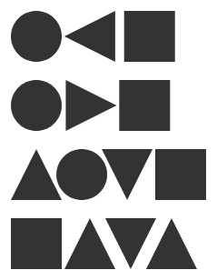
        <figcaption>
          Area model, emulated: margin 5 px a flat side, depth a quarter of the
          shape's height, band the shape's height, with a contact floor of 3 px.
        </figcaption>
      </figure>
      <figure class="">
        
        <figcaption>Georgia, contact gap 6 px (as above).</figcaption>
      </figure>
      <figure class="">
        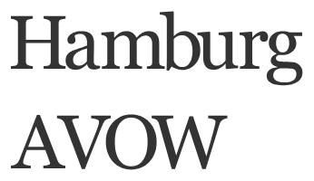
        <figcaption>
          Georgia, area model, emulated: margin 3 px a flat side, depth 20% of
          the x-height, band to the cap height or x-height, contact floor 2 px.
        </figcaption>
      </figure>
    </div>
    <h4>What it means for GoFish</h4>
    <p>
      <b>It fits the locality rule better than contact.</b> Contact compares two
      neighbors' outlines, so it is a property of a pair. The area model gives
      each shape one number per side, from that shape alone, and the spread
      combines them.
    </p>
    <p>
      <b>It evens out some of the gaps Josh saw.</b> In the emulation the round
      and pointed sides get smaller margins than the square's flat side, so the
      wedge beside the square shrinks, and AVOW opens up relative to contact. It
      does not stop collisions, because each side ignores its neighbor: two
      pointed sides can both get small or negative margins. So contact stays as
      a floor, "never closer than a minimum gap", and the emulation needs it for
      the up, down, up triangles.
    </p>
    <p>
      <b>It adds parameters</b> (band, depth, target area) that type designers
      tune per typeface. GoFish would need defaults that work across shapes and
      sizes, and the emulation shows the cost: Georgia's "Hamburg" sets tighter
      than under contact, because its serifs fall inside the depth and lower
      every stem's margin.
    </p>
    <p>
      <b>Our earlier "optical" emulation did not follow this model.</b> It
      compared pairs and used a far too deep cap, which is why it looked worse
      than contact.
    </p>
    <p>
      <b>Layout precedent.</b> SwiftUI, already GoFish's precedent for alignment
      guides, gives every view a <code>ViewSpacing</code>: independent
      preferences for its top, bottom, leading and trailing edges. A stack with
      default spacing (<code>HStack(spacing: nil)</code>) asks
      <code>a.distance(to: b, along:)</code>, which takes the facing edges'
      preferences "and returns the greater of the two values", in Apple's words
      "the smallest value that provides enough space to satisfy the preferences
      of both views" (developer.apple.com/documentation/swiftui/viewspacing). So
      each edge states a minimum gap, and they combine by max. The values are
      system defaults by kind of view; users cannot set them, and a custom
      <code>Layout</code> only reports the spacing around itself with
      <code>spacing(subviews:cache:)</code>, usually the union of its children's
      edges. A preference can also differ by the kind of neighbor (text next to
      other views), so it is not purely per side. CSS margins are per side too:
      horizontal margins add, and vertical margins between blocks collapse to
      the larger one. GoFish would differ from both in where the per-side
      numbers come from: the shape's outline, with the rule chosen by
      <code>Spacing.*</code>.
    </p>
    <p>
      <b>Sum or max.</b> The precedents disagree about what a side's number
      means. In SwiftUI and CSS vertical margins each side states the minimum
      gap it needs, and the gap is the larger of the two. In HT Letterspacer and
      CSS horizontal margins each side contributes its own white, and the gap is
      the total. For margins measured from an outline, sum is the natural
      reading; for a declared minimum such as contact padding, max is. This is a
      decision.
    </p>
  </article>
  <h2 id="blur">Blurred outlines, optical centering and insets</h2>
  <article class="card">
    <h4>Blurred outlines: who does this</h4>
    <p>
      Peter Wiegel proposed it for type in 2012, on the FontForge and FreeType
      lists ("Peter Wiegel's auto spacing idea"): blur a pixel copy of each
      letter, turn the gray pixels black, and push letters together until the
      new outlines touch. Werner Lemberg replied that for horizontal spacing the
      blurred bitmaps can be shifted directly, without tracing them. In the same
      thread Behdad Esfahbod proposed a pair version: convolve each glyph with a
      Gaussian, then set two glyphs so the integral of their shifted, multiplied
      Gaussians equals a constant. That version does respond to the wedge
      between two shapes. Sebastian Kosch's "Towards an attention-based
      letterfitting model" (2019) also starts with a Gaussian low-pass filter.
      Kernagic (Øyvind Kolås) finds stems and aligns them, following Frank
      Blokland's research, according to Kosch's survey; we found no blur in it,
      but did not read its source.
    </p>
    <p>
      The same blurred outline serves alignment, not just spacing. Josh saw it
      used on Twitter to center an airplane icon in the Dynamic Island's rounded
      rectangle. <code>alignment: "middle"</code> could center a child's blurred
      outline instead of its box. The classic case is a play triangle in a
      circle: centered by its box it looks shifted left, so designers nudge it
      right. Blurring does not move the center of mass, so centering the blurred
      ink's center of mass is the same as centering the ink's own.
    </p>
    <svg
      viewBox="0 0 360 146"
      role="img"
      aria-label="A play triangle centered in a circle three ways"
      style="
        width: 100%;
        max-width: 420px;
        height: auto;
        display: block;
        margin: 8px 0;
        font-family: Inter, system-ui, sans-serif;
      "
    >
      <circle
        cx="60.0"
        cy="58"
        r="44"
        fill="none"
        stroke="var(--fg)"
        stroke-width="2"
      />
      <polygon points="40.0,35.0 80.0,58.0 40.0,81.0" fill="var(--fg)" />
      <line
        x1="60.0"
        y1="10"
        x2="60.0"
        y2="106"
        stroke="var(--muted)"
        stroke-dasharray="2 3"
      />
      <text
        x="60.0"
        y="124"
        text-anchor="middle"
        font-size="12"
        fill="var(--fg)"
      >
        box center
      </text>
      <text
        x="60.0"
        y="139"
        text-anchor="middle"
        font-size="11"
        fill="var(--muted)"
      >
        shift +0.0 px
      </text>
      <circle
        cx="180.0"
        cy="58"
        r="44"
        fill="none"
        stroke="var(--fg)"
        stroke-width="2"
      />
      <polygon
        points="166.0,39.1 164.5,40.1 163.8,41.1 163.5,42.1 163.2,43.1 163.0,44.1 163.0,45.1 162.8,46.1 162.8,47.1 162.8,48.1 162.8,49.1 162.8,50.1 162.8,51.1 162.8,52.1 162.8,53.1 162.8,54.1 162.8,55.1 162.8,56.1 162.8,57.1 162.8,58.1 162.8,59.1 162.8,60.1 162.8,61.1 162.8,62.1 162.8,63.1 162.8,64.1 162.8,65.1 162.8,66.1 162.8,67.1 162.8,68.1 162.8,69.1 162.8,70.1 163.0,71.1 163.0,72.1 163.2,73.1 163.5,74.1 164.0,75.1 164.8,76.1 168.5,76.9 171.2,75.9 173.0,74.9 175.0,73.9 176.8,72.9 178.2,71.9 180.0,70.9 181.8,69.9 183.5,68.9 185.2,67.9 187.0,66.9 188.8,65.9 190.5,64.9 192.2,63.9 193.8,62.9 195.0,61.9 196.0,60.9 196.8,59.9 197.2,58.9 197.2,57.9 197.2,56.9 196.8,55.9 196.0,54.9 194.8,53.9 193.5,52.9 191.8,51.9 190.0,50.9 188.2,49.9 186.8,48.9 185.0,47.9 183.2,46.9 181.5,45.9 179.8,44.9 178.0,43.9 176.2,42.9 174.5,41.9 172.8,40.9 170.5,39.9"
        fill="var(--accent)"
        fill-opacity="0.3"
      />
      <polygon points="162.6,35.0 202.6,58.0 162.6,81.0" fill="var(--fg)" />
      <line
        x1="180.0"
        y1="10"
        x2="180.0"
        y2="106"
        stroke="var(--muted)"
        stroke-dasharray="2 3"
      />
      <text
        x="180.0"
        y="124"
        text-anchor="middle"
        font-size="12"
        fill="var(--fg)"
      >
        blurred outline
      </text>
      <text
        x="180.0"
        y="139"
        text-anchor="middle"
        font-size="11"
        fill="var(--muted)"
      >
        shift +2.6 px
      </text>
      <circle
        cx="300.0"
        cy="58"
        r="44"
        fill="none"
        stroke="var(--fg)"
        stroke-width="2"
      />
      <polygon points="286.7,35.0 326.7,58.0 286.7,81.0" fill="var(--fg)" />
      <line
        x1="300.0"
        y1="10"
        x2="300.0"
        y2="106"
        stroke="var(--muted)"
        stroke-dasharray="2 3"
      />
      <text
        x="300.0"
        y="124"
        text-anchor="middle"
        font-size="12"
        fill="var(--fg)"
      >
        ink center of mass
      </text>
      <text
        x="300.0"
        y="139"
        text-anchor="middle"
        font-size="11"
        fill="var(--muted)"
      >
        shift +6.7 px
      </text>
    </svg>
    <p class="note">
      A play triangle centered three ways. The blurred outline (σ 4, light blue)
      retracts at the tip, which moves the triangle 2.6 px right; the center of
      mass moves it 6.7 px.
    </p>
    <p>
      <b
        >Josh's judgment: the ink center of mass looks centered; the box and the
        blurred outline both leave the triangle looking left.</b
      >
      The center of mass is a per-shape measure, so it keeps locality, and
      blurring does not move it. It is the leading candidate for how
      <code>alignment: "middle"</code> could center optically.
    </p>
    <p>
      The airplane Josh saw on Twitter (the Dynamic Island) is a different
      problem: the plane sits at the left end of a pill, and its inset from the
      left wall has to look equal to its insets above and below. That is spacing
      again, with the container's wall as the neighbor. Below, the plane is
      inset 12 px from the left (the same as above and below) three ways,
      emulated: by its box, by contact with the curved wall, and by white area
      (the mean white between the plane and the wall, capped on each line, as in
      (d)).
    </p>
    <svg
      viewBox="0 0 630 114.0"
      role="img"
      aria-label="An airplane icon inset in a pill three ways"
      style="
        width: 100%;
        max-width: 640px;
        height: auto;
        display: block;
        margin: 8px 0;
        font-family: Inter, system-ui, sans-serif;
      "
    >
      <rect
        x="10"
        y="6"
        width="190"
        height="68.0"
        rx="34.0"
        fill="var(--code-bg)"
        stroke="var(--line)"
      />
      <polygon
        points="70.0,40.0 67.0,37.0 50.0,37.0 40.0,18.0 35.0,18.0 39.0,37.0 29.0,37.0 25.0,29.0 22.0,29.0 24.0,37.0 24.0,43.0 22.0,51.0 25.0,51.0 29.0,43.0 39.0,43.0 35.0,62.0 40.0,62.0 50.0,43.0 67.0,43.0"
        fill="var(--fg)"
      />
      <line
        x1="22"
        y1="3"
        x2="22"
        y2="77.0"
        stroke="var(--muted)"
        stroke-dasharray="2 3"
      />
      <text
        x="105.0"
        y="94.0"
        text-anchor="middle"
        font-size="13"
        fill="var(--fg)"
      >
        box inset 12
      </text>
      <text
        x="105.0"
        y="110.0"
        text-anchor="middle"
        font-size="12"
        fill="var(--muted)"
      >
        +0.0 px from box
      </text>
      <rect
        x="220"
        y="6"
        width="190"
        height="68.0"
        rx="34.0"
        fill="var(--code-bg)"
        stroke="var(--line)"
      />
      <polygon
        points="281.8,40.0 278.8,37.0 261.8,37.0 251.8,18.0 246.8,18.0 250.8,37.0 240.8,37.0 236.8,29.0 233.8,29.0 235.8,37.0 235.8,43.0 233.8,51.0 236.8,51.0 240.8,43.0 250.8,43.0 246.8,62.0 251.8,62.0 261.8,43.0 278.8,43.0"
        fill="var(--fg)"
      />
      <line
        x1="232"
        y1="3"
        x2="232"
        y2="77.0"
        stroke="var(--muted)"
        stroke-dasharray="2 3"
      />
      <text
        x="315.0"
        y="94.0"
        text-anchor="middle"
        font-size="13"
        fill="var(--fg)"
      >
        contact inset 12
      </text>
      <text
        x="315.0"
        y="110.0"
        text-anchor="middle"
        font-size="12"
        fill="var(--muted)"
      >
        +1.8 px from box
      </text>
      <rect
        x="430"
        y="6"
        width="190"
        height="68.0"
        rx="34.0"
        fill="var(--code-bg)"
        stroke="var(--line)"
      />
      <polygon
        points="485.1,40.0 482.1,37.0 465.1,37.0 455.1,18.0 450.1,18.0 454.1,37.0 444.1,37.0 440.1,29.0 437.1,29.0 439.1,37.0 439.1,43.0 437.1,51.0 440.1,51.0 444.1,43.0 454.1,43.0 450.1,62.0 455.1,62.0 465.1,43.0 482.1,43.0"
        fill="var(--fg)"
      />
      <line
        x1="442"
        y1="3"
        x2="442"
        y2="77.0"
        stroke="var(--muted)"
        stroke-dasharray="2 3"
      />
      <text
        x="525.0"
        y="94.0"
        text-anchor="middle"
        font-size="13"
        fill="var(--fg)"
      >
        white area inset 12
      </text>
      <text
        x="525.0"
        y="110.0"
        text-anchor="middle"
        font-size="12"
        fill="var(--muted)"
      >
        -4.9 px from box
      </text>
    </svg>
    <p class="note">
      Emulated. The narrow tail leaves white beside it, so white area moves the
      plane 4.9 px left of the box inset; contact with the curved wall moves it
      1.8 px right. This generalizes the spacing strategy to padding: the same
      rule could set gaps between siblings and gaps to a container's wall.
    </p>
    <p>
      <b>Open question.</b> Should there be one "how this shape is measured"
      setting (box, outline, blurred outline) that spread, stack, alignment and
      contact all read, instead of a blur option on each operator? The same
      <code>Spacing.*</code> value could then also set padding inside a
      container, such as <code>enclose</code>'s. It would fit the profile idea,
      where a shape reports a summary and its parent reads it. This page does
      not recommend it.
    </p>
  </article>
  <h2 id="choices">The choices and the naming</h2>
  <article class="card">
    <h4>The choices</h4>
    <ol>
      <li>
        <b>Keep <code>Spacing.contour(n)</code> with a known limit.</b> Its docs
        say it guarantees a minimum gap, not an even look.
      </li>
      <li>
        <b
          >Keep <code>Spacing.contour(n)</code> as the floor, and add the area
          model later</b
        >
        as one more <code>Spacing</code> strategy that uses contact as its
        floor. The option does not change. Optical spacing is still not
        recommended now.
      </li>
      <li>
        <b>Park contour spacing</b> until an example needs it, and ship
        <code>Spacing.box</code> and <code>Spacing.pitch</code> only.
      </li>
    </ol>
    <div class="table-wrap">
      <table>
        <tr>
          <th>Model</th>
          <th>Rule</th>
          <th>Where it is used</th>
        </tr>
        <tr>
          <td>Box gap</td>
          <td>the gap between bounding boxes along the axis</td>
          <td>
            today's <code>spread</code>; Graphviz <code>nodesep</code>;
            d3-sankey <code>nodePadding</code>
          </td>
        </tr>
        <tr>
          <td>Pitch</td>
          <td>a fixed distance between a named point on each child</td>
          <td>
            today's <code>anchor: "baseline"</code>; ggridges'
            <code>scale</code>
          </td>
        </tr>
        <tr>
          <td>Contact</td>
          <td>
            the smallest gap between facing outlines, slice by slice, equals the
            gap
          </td>
          <td>
            tidy trees (Reingold and Tilford, 1981, compare contours level by
            level), <code>d3.tree</code>, d3-flextree (van der Ploeg, 2014, for
            nodes of different sizes), GoTree; skyline packing
          </td>
        </tr>
      </table>
    </div>
    <p>
      <b>Naming.</b> How the gap is measured becomes the value of
      <code>spacing</code>, a strategy family (<code>Spacing</code>, uppercase,
      as the API rules ask for a choice among strategies). A plain number stays
      as sugar for <code>Spacing.box(n)</code>.
      <code>Spacing.pitch(70, { at: "baseline" })</code> replaces spread's
      <code>anchor</code> option, which about 28 story, test and docs files use
      today, each a mechanical change.
    </p>
  </article>

  <h2>Open decisions</h2>
  <ol class="decisions">
    <li>
      Keep <code>Spacing.contour(n)</code> for packing (tidy trees, ridgelines),
      and add a separate <code>Spacing</code> strategy for looking even, chosen
      by what the visualization is for? Contact would also stay as the floor
      under the looking-even strategy.
    </li>
    <li>
      Optical centering for <code>alignment: "middle"</code>: center the ink's
      center of mass (Josh's pick on the play button; per shape, unchanged by
      blur), the blurred outline's box, or keep the box?
    </li>
    <li>
      If the fillet area model is kept:
      <code>Spacing.fillet(n, { radius })</code>, its own strategy, or
      <code>Spacing.contour(n, { fill: radius })</code>, an option of contact?
      It compares pairs, so it gives up per-shape locality; the SDF opening (g)
      keeps it but moves less. A default radius of 2n worked on the test rows.
    </li>
    <li>
      If the blurred outline is kept, is it an option of contact,
      <code>Spacing.contour(n, { blur: 6 })</code>, or its own strategy,
      <code>Spacing.blurred(n, 6)</code>?
    </li>
    <li>
      Is there one "how this shape is measured" setting (box, outline, blurred
      outline) that spread, stack, alignment and contact all read, instead of an
      option on each?
    </li>
    <li>
      If per-side margins come, do two neighbors' margins combine by sum (HT
      Letterspacer, CSS horizontal margins: each side's own white) or by max
      (SwiftUI <code>ViewSpacing</code>, CSS vertical margins: each side's
      minimum)?
    </li>
    <li>
      <code>spacing</code> takes a number (sugar for
      <code>Spacing.box(n)</code>) or a <code>Spacing</code> strategy, and
      <code>Spacing.pitch(n, { at })</code> replaces spread's
      <code>anchor</code> option?
    </li>
  </ol>
</main>

<script src="https://cdnjs.cloudflare.com/ajax/libs/highlight.js/11.9.0/highlight.min.js"></script>
<script src="https://cdnjs.cloudflare.com/ajax/libs/highlight.js/11.9.0/languages/r.min.js"></script>
<script>
  document.querySelectorAll("pre.code code").forEach(function (el) {
    if (window.hljs) hljs.highlightElement(el);
    var hl = (el.dataset.hl || "").split(",").filter(Boolean).map(Number);
    el.innerHTML = el.innerHTML
      .split("\n")
      .map(function (l, i) {
        return (
          '<span class="ln' +
          (hl.indexOf(i) >= 0 ? " hl" : "") +
          '">' +
          (l || " ") +
          "</span>"
        );
      })
      .join("");
  });
  function setLang(py) {
    document.body.classList.toggle("py", py);
    document.querySelectorAll(".toggle button").forEach(function (b) {
      b.setAttribute("aria-pressed", String((b.dataset.lang === "py") === py));
    });
    try {
      localStorage.setItem("sp-lang", py ? "py" : "js");
    } catch (e) {}
  }
  document.querySelectorAll(".toggle button").forEach(function (b) {
    b.addEventListener("click", function () {
      setLang(b.dataset.lang === "py");
    });
  });
  try {
    setLang(localStorage.getItem("sp-lang") === "py");
  } catch (e) {
    setLang(false);
  }
</script>
